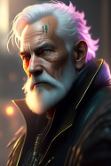

6. Ход королевы
|
DungeonMaster
Valkorolessandra
14.07.2025 14:25 |
Гуанбо. Маленький Китай. 19 февраля 2045 года. Воскресенье. 9:00.
Ночью сообщение Коми осталось без ответа и только в воскресенье, в 6:50 он получил мисс будт одижать вас в Гуанбо 403 9;00 На четвертом этаже Гуанбо, в офисе CSS дежурил двухметровый мулат с низким и каким-то джазовым голосом. Проследив за тем как Never More сдали оружие и заперев в обитые тканью ящички агенты и диктофоны, он проводил всех в 403 комнату и вернулся за стойку. В комнате никого не было. Однако, не успели старики-разбойники начать возмущаться, как в четверть десятого открылась дверь и уже знакомый телохранитель пропустил вперед Зельду.  – Долго же вы думали. – Проронила она вместо приветствия. Но потом кокетливо улыбнулась, поднимая портфельчик, который держала в руках. – Что ж, приступим. Перед Коми на стол снова легла пачка бумаги. На этот раз это была не рыба. Договор был оформлен и даже подписан. От лица компании Фьючер Роботикс Инк. выступал некий Хэмиш Паркинсон. По сравнению с предыдущим вариантом текст был лишь слегка отшлифован, но в целом, остался тем же. Едва пауза затянулась, телохранитель, убедившись, что хозяйка следит за контрагентами, подмигнул Парочке и показал кулак. – Итак? – Зельда изогнула бровь, ожидая, пока Эрвин ознакомится с документом. – Обещанный аванс вы получите здесь и сейчас же, после подписания и отчета о том, что вы уже узнали. |
|
Эрвин `Коми` Давыдов
Хэлсэ
 14.07.2025 16:39 14.07.2025 16:39 |
Наконец-то дома... Чёрт, как же он полюбил эту халупу, со всеми прелестями правления Триад вокруг. Китайские ресторанчики, красные фонари и неоновые вывески с едва знакомыми иероглифами. Когда-то, лет пять назад, когда он переселился в Маленький Китай из Глена, у него возникало не мало проблем в этих переулках, ввиду слабого понимания языка и отсутствия существенных знакомств. Давно забытое имя рокербоя не давало никаких преимуществ, однако умение вести дела быстро исправило ситуацию. Понемногу помогая местным лавочникам с бюрократической волокитой, решая незначительные финансовые трудности, Коми узнал имена местных главарей банд, детективов NCPD и прочих людей, контролирующих деловой процесс тут, на азиатских улочках американского Найт Сити.
По дороге домой, Давыдов зашёл в знакомую лапшичную неподалёку, съел горячий, весь пропитанный соей и острым перцем удон, обменялся парой реплик со старым владельцем заведения, созвонился с Джао, попросил утром докинуть до Гуанбо и, довольный вот таким вот простым бытовым общением, направился в жилой комплекс. Одинокая квартира не казалась пустой, нелюдимой. Обжитое помещение само походило на доброго товарища, готового принять у себя и в беде и в радости. Душ, холодная бритва, жгучий ментоловый лосьон, чашка чая, стиральная машина, свежая простыня и чёрная бездна сна. Перед выходом, Коми обнаружил, что оставленная сушиться одежда всё ещё сыра. "Может оно и к лучшему", подумал Рокербой, доставая из гардероба свежие, зауженные чёрные брюки, одетые пару раз и доставляющие несколько неприятный дискомфорт в области паха, "Зато на заднице сидят отлично". Свободная чёрная рубашка с золотой каймой вдоль пуговиц свободна села на плечи. Когда он её купил лет 7 назад, она была маловата в плечах, сейчас же села ровно по фигуре. Тренч Коми забрал из химчистки, в том же месте, где его ждал красный автомобиль водителя из триад. В дороге, Джао восторгался концертом, сказал, что отдаст всё что есть за запись, если таковая имеется. Эрвину не хотелось расстраивать парня, потому тот предположил, что на камерах в Октябре возможно сохранилась запись, стоит пошаманить с записью с пульта и выйдет не плохой подпольный бутлет. Но это когда-нибудь потом. "Возможно в другой жизни", мрачно заключил про себя Эрвин. Рокербой сидел на прежнем месте, в наглую забросив ноги на стол. Пропустив язвительное замечание Зельды мимо ушей, он проводил её взглядом до стула, отмечая движение бёдер и грацию женского тела. - Иногда стоит потянуть время, проверить заинтересованность сторон в совместной деятельности. - спокойно сказал Давыдов, перелистывая страницы договора, - Если я правильно понял, Фьючер Роботикс это какая-то фирма прокладка? Удобно... Жаль. Хотелось поработать с настоящим заказчиком. Говоря это, Коми усиленно припоминал, сталкивался ли он с названием этой фирмы ранее.
Результат броска 1D10+8: 12 - "Уход за собой".
Результат броска 1D10+6: 9 - "Проницательность". Результат броска 1D10+10: 15 - "общение". Результат броска 1D10+8: 13 - "Гардероб и стиль". Результат броска 1D10+10: 13 - "концентрация". Результат броска 1D10+14: 19 - "убеждение". Результат броска 1D10+10: 13 - "Бизнес". Результат броска 1D10+6: 8 - "Бюрократия". Результат броска 1D10+8: 18 - "Внимательность". Результат броска 1D10+10: 14 - "Бизнес на договор". Результат броска 1D10: 2 - "+внимательность" Гардероб и уход за собой: Прихорашиваемся перед встречей, одеваемся в меру вычурно, но весьма по-деловому.
Проницательность и внимательность: Оцениваем Зельду, движения (может, выдаст свой возраст или неуклюжесть?, внешний вид (может торопилась и какая-то небрежность её выдаёт?), интонацию в голосе (усталость, заинтересованность, оттягивания разговора, попытку что-то скрыть или ляпнуть не то, что следовало). Общение и убеждение: Производим впечатление, общаемся как с равной, показываем, что знаем достаточно. Концентрация и бизнес: Вспоминаем про Фьючер Роботикс. Бюрократия и Бизнес на договор: изучаем договор, что происходит с договором, в случае банкротства или смерти Паркинсона и компании |
|
Ральф `Датч` ван Бюрен
JasperCorax
 15.07.2025 18:39 15.07.2025 18:39 |
Ральф долго не собирался, и надел на встречу утром следующего дня свой стандартный набор походно-повседневной одежды, тем более, что говорить сегодня будет явно не он. Но оружие смазал и вычистил во внеочередном порядке, мало ли. Особенно свой любимый "Персей", к которому Датч питал почти нездоровую слабость, и который клал на тумбочку рядом с кроватью, особенно после случая когда какие-то отморозки решили ему отомстить за "допрос с особой жестокостью". Ральф так и не понял, че им было надо, радовались юы, что в принципе сами ушли, ведь если бы не Макс, он бы их там на пустыре и закопал, возможно - еще живыми.
Встал он как обычно - в дурном настроении, особенно после того как проснулся от собственного же крика поле очередного яркого эпизода с войны, всплывшего по велению излишне памятливого мозга. Пришлось прибить пару тысяч клеток стаканом синт-водки, а наутро - поправляться синт-кофе. Так что подвозивший ван Бюрена таксист чаевых не дождался. Подходя последние кварталы пешком, Датч осматривался, пытаясь понять, приехала ли уже их нанимательница, то есть не стоят ли какие средства передвижения, наземные или воздушные рядом со зданием, в котором назначена встреча или неподалеку, для этого не лень было даже приехать заранее и пройтись-прогуляться по окрестностям, заодно посмотрев, нет ли какой подготовки к тому, что им будут, так сказать, популярно объяснять, насколько они неправы в случае если переговоры пойдут не так, то есть, нет ли каких скоплений потенциально опасных корпоратов, пусть и косящих под мирных граждан. В здание оперативник прибыл вовремя - ровно с Коми. Так и входили в комнату переговоров, хотя лучше бы не входили - оружие Датчу сдавать совсем не хотелось, много ли надежды на этих вылизанных пиджаков, они и от корпоратов-то не особо отличаются, хоть и наверняка работают на кого-то из теневых королей города. И все же, под пристальным взглядом чумб, оружие перекочевало в ящик для хранения, и ван Бюрен вошел в комнату, усевшись чуть поодаль, поближе к входу на всякий случай за спиной Коми, как-будто прикрывая того в двойке. Пришлось подождать. И вот она нарисовалась, да еще и с претензиями. Датч не был особо щепетильным, но вот именно в этот момент в нем проснулась почти отеческая любовь к Зельде и желание добавить в ее организм некоторых микроэлементов, сугубо для улучшения здоровья. Особенно, на взгляд отставного солдата, было бы полезно добавить свинца. Но мальчик уже вышел из того возраста, чтобы пытаться прибить каждого дерзящего урода, так что просто смотрел и слушал, особенно за охранником. Ральф видел, что Коми пристально присматривается к нанимательнице, но тем не менее сам присмотрелся также внимательно и к ней, и к ее охране. Если идея о том, что она непроста и сама может быть связана если не с боевиками, то с разведкой, верна, то становилось еще интереснее. Помимо прочего, показалось нелишним глянуть на договор, нет ли в нем следов подделки. Такое, конечно, было маловероятно, но обжегшись на молоке, дуешь на воду. Так что Датч сидел, смотрел и предоставлял своим более искушенным чумбам вести переговоры
Результат броска 1D10+6: 8 - "Тактика на возможные засады или скопления подозрительных людей рядом с местом переговоров".
Результат броска 1D10+8: 9 - "Внимательность на поиск средства передвижения, которым потенциально могла прибыть заказчица". Результат броска 1D10+8: 13 - "Внимательность на соло-охранника, попытка примерно оценить уровень как бойца". Результат броска 1D10+8: 12 - "Внимательность на Зельду, попытка оценить ее как бойца". Результат броска 1D10+4: 12 - "Фальсификация на договор". |
|
Клод `Volk` Бишофф
Haru
 15.07.2025 22:55 15.07.2025 22:55 |
Споры, ожидаемо, похоже не спешили прекращаться. Volk уже было подумывал плюнуть и отправиться домой, да получить с утра, так сказать, выжимку из обсуждений. Но вместо того, кинув последний взгляд на едва ли видимое отсюда ночное небо, снова вернулся в заведение. Там, к тому времени, все же пришли к какому-то общему решению, пусть и не ко всеобщему удовольствию. Со своими шероховатостями, но Клода оно устроило.
Дом был привычно пуст, но встретил его каким-то подзабытым чувством комфорта. Ночь в вонявшей падалью подземной лаборатории, конечно, давала о себе знать. Но было что-то еще. Предчувствие. Они приняли решение, и это могло значительно сказаться на их дальнейших жизнях. Притом не лучшим образом. И вот осознание этого делало окружающую простую обстановку обжитой за годы комнаты такой комфортной и в тоже время такой хрупкой. В душ, наконец-то, он отправился параллельно с брошенными в стирку шмотками. Под хлесткими струями воды Бишофф оценивал своё отражение. И невольно сравнивал с увиденным в последние дни. Его это не особо волновало-то последние годы, он не Коми - ему лицом не торговать перед фанатками. Но когда видишь себя таким, как был, хочешь не хочешь, а прикидываешь перспективы бодискульптинга. Не то, чтобы после встречи с корпоратами все эти чудеса медицины доберутся до гроба в приличном виде - по сравнению с ними методы допроса целей у Volk'а по большей части были еще лайтовыми. По большей части. Оружие оставил уже на утро. После посещения лабы его требовалось обслужить не меньше, чем самого себя, но то самое предчувствие... - оно говорило, что предстоящие события очень близко, но не сегодня ночью. И зная, что принимает не самое разумное решение - в чем он не сознался бы вслух, он этому поверил. К месту встречи, получив сообщение с координатами от своих, постарался прибыть заранее, насколько мог с учетом того, как все складывалось. Стоя через дорогу, Клод молча глядел на здание Guăngbō, скрывавшее за своим откровенно захудалым видом очень любопытное нутро. Volk о нём знал и оценил выбранные нанимателем условия. Корпа достаточно понятно доносила и свой статус и, по крайней мере пыталась, - их, выбрав столь защищенное место в столь непрезентабельном месте. И свой серьезный настрой - тоже. Собственно, заранее он прибыл не просто так. Пока все собирались, он хотел присмотреться к пребывающим со стороны. Пускай они и отказались от плана с более приватным разговором с этой Зельдой, но как ему это мешало просто понаблюдать в попытках усвоить чуть больше. Как и на чем она прибудет. Как отбудет. Конечно, вокруг и без неё хватало насыщенной городской жизни, но много ли корпов прибывало в Гуанбо на встречу к 9 часам? И, к слову о самом месте встречи - учитывая его состояние, каковы были шансы, что корпы в своем стиле прибудут в него по воздуху? За этим тоже приходилось следить, благо это было немного попроще. С не менее внимательно обхаживающим здание Датчем пересеклись как бы не раньше прочих, но не желая привлекать лишнего внимания, Клод предпочел, чтобы наблюдения оставались независимыми. А встречи с остальными членами банды и вовсе постарался избегать - пусть собираются и ведут переговоры внутри, и без Клода найдется кому. А он немного задержится. И только выдержав паузу он присоединился к остальным, рассчитывая застать переговоры уже в процессе. Особо вмешиваться он не спешил, просто помнил, что для получения аванса требовалось личное присутствие. Да и подпиши он всех на это, а сам не засвети своё лицо - по уличным меркам это было бы западло. Ну и лишний раз самолично оценить ту самую Зельду, казалось, совсем не помешало бы.
Результат броска 1D10+9: 18 - "Концентрация".
Результат броска 1D10+11: 21 - "Внимательность". Результат броска 1D10+10: 17 - "Тактика". Результат броска 1D10+10: 11 - "Проницательность на Зельду". Результат броска 1D10: 6 - "Крит успех Внимательности" Результат броска 1D10: 5 - "Крит провал Проницательности" Концетрация, чтобы не отвлекаться на постороннее. Внимательность на высматривание способа прибытия и вычленения из прочих. Тактика на оценку подготовки "переговорщиков" к встрече.
Независимо оцениваем поведение Зельды. Не рвусь впереди паровоза, но если все уляжется быстро и без лишней крови, то свалит Клод тоже первым, чтобы понаблюдать и за отъездом "принцессы". |
|
Аня `Парочка` Колусевски
Masticora
16.07.2025 15:30 |
Чем банда из хороших людей, отличается от обычной? Обычно у хороших людей есть свои мнения по разным вопросам, особенно в неоднозначных ситуациях или при наличии моральных выборов. Ситуация с клонами и записью личности была как-раз из таких. А чем хорошая банда отличается от обычной? Правильно, кода решение принято, все играют вместе. Never More была хорошей бандой из хороших людей, по крайней мере, Аня считала именно так.
Вот только опыт подсказывал ей, что нужно быть готовой к тому, что сука - удача отвернется в сторону и все пойдет по пизде. За себя парочка не боялась уже давно, но дочку и внука следовало обезопасить. К счастью, при своей немного опасной работы соло, Колусевски была готова к тому, что ее могут начать шантажировать родными. Например, чтобы добраться до очередного охраняемого ей «тела». Поэтому квартира дочки была защищена. Но явно не настолько, чтобы противостоять корпам. Так что Аня тяжело вздохнула, подумала: - Саманта меня проклянет, - потом достала агент и отправила дочки сообщение из одной буквы «Т». Это был план, по которой Саманта с сыновьями временно покидала Найт-сити и отправлялась путешествовать. На этот случай все было подготовлено, и заначка, и комплекты документов из разряда «лучше настоящих». Так что утром она отправилась на встречу веселая, спокойная и … готовая опять сыграть с телохранителем Зельды в «камень-ножницы-бумага». "Т", от tylek - задница (польск.)
|
|
Andreas `Gonzo` Schreyer
Томми Аткинс
16.07.2025 17:18 |
Андреас особо готовиться к встрече не стал. Сердце болело и за отца и за оболтуса, да даже за бывшую жену - хоть бывшая, а всё же своя. Но действенного плана Б у него не было - подвинуть с места его благоверную может пытаться только человек, не знакомый с ней лично. Да и отца паралитика проще пристрелить, чтоб не мучился.
Нет, господа. Плана Б быть не должно. Надо реализовать план А - может быть, с небольшими осложнениями, но не более того. Так что он сидел, смотрел, слушал. Что, если прямо спросить у них, как они завязаны на Роклин? Впрочем, каждый сверчок знай свой шесток - переговоры ведёт кто-то один и этот один сегодня не Андреас. |
|
DungeonMaster
Valkorolessandra
16.07.2025 17:59 |
Гуанбо. Маленький Китай. 19 февраля 2045 года. Воскресенье. 9:20.
Клод и Ральф аки коршуны кружили вокруг Гуанбо, поджидая корпоратку. Их пути пересекались дважды за круг, но они даже не переглядывались. Бишшофу повезло. Аккурат когда Датч скрылся за поворотом, ко входу подъехала вишневая пятидверная квадра, из которой вышла Зельда и два мордоворота. Третий остался в машине, нагло припарковав ее на тротуаре неподалеку. Корпоратка с двумя телохранителями направилась ко входу и тут Клоду показалось, что она притормозила. Так, будто общалась с кем-то, через агент или имплант. При этом она посмотрела по сторонам – то ли искала кого-то, то ли смотрела, не следит ли за ней кто-то. И только после этого скрылась в дверях. – Вы все правильно поняли, мистер Давыдов, – Зельда продолжала мило улыбаться. Кажется, занимаясь привычным делом, она чувствовала себя более уверенно и вообще казалась более заинтересованной, чем в прошлый раз. Она развела руками. – Пока так. Но это не значит, что так будет всегда. Вполне возможно, что ваше желание осуществится и нужда в прокладках отпадет. Все будет зависеть от ваших успехов. – На последней фразе она обвела взглядом всех Never More. Клод: Зельда прибыла на крепкой тачке в компании трех соло. Один остался в тачке, двое ушли с ней. Похоже, она с кем-то на связи.
Эрвин: Зельда двигается на свой видимый возраст или около того. Выглядит приветливее и заинтересованнее, чем в первую встречу. Фьючер Роботикс и фамилия представителя никому ни о чем не говорит. Договор от имени субподрядчика (Фьючер Роботикс), выступающего в интересах неназванного клиента с целью нанять исполнителей для возвращения собственности оного клиента. |
|
Эрвин `Коми` Давыдов
Хэлсэ
16.07.2025 18:53 |
- Не только от наших, - заметил Коми. - В подобных случаях, доверие со стороны заказчика играет не менее важную роль. Впрочем...
Эрвин всячески старался избегать прямого личного обращения к заказчице, тем самым оставляя загадкой, как много удалось выяснить Never More. - Впрочем, я и не думал что Роклин впишется во всё это лично. Единственное почему я не люблю субподряды - они всегда являются первоочередной причиной утечек. Даже если прокладка существует исключительно на бумаге, всё, что проходит через неё, попадает под пристальный взгляд конкурентов, как только те узнают о её существовании. Давыдов сбросил ноги со стола и, поправив воротник тренча, продолжил. - Кажется, я заранее начал оправдываться, простите... Дурная манера оценивать риски. К слову, как насчёт тех людей, что волей не волей прикоснулись к объекту нашего контракта. Скажем так, в процессе оценивания работодателя, нам потребовались сторонние агенты... Которые, я всего лишь предполагаю, могут знать некоторую конфиденциальную информацию. Конечно, за каждого мы готовы поручиться лично, но вписывать их всех под NDA с выплатами части прибыли за столь малый вклад... Мне бы не хотелось. Говоря всё это, Коми открыл подписной лист и чиркнул подпись. Ту подпись, что он обычно использовал для всяких сомнительных дел, точную копию Энтони Дарка, какого-то ветерана 3 корпоративной, чью манеру подписывать документы он перенял ещё в 30-х. С тех пор, в Найт Сити было две весьма похожих подписи, только одна, в случае суда, распознавалась как подпись Давыдова, другая - как Дарка. Для автографов же Коми пользовался закорючкой, придуманной когда тому не было и 17 лет. - О подробностях, думаю, стоит поговорить после подписания контракта и получения аванса, - кладя ручку, заключил рокербой.
Результат броска 1D10+14: 16 - "фальсификация".
Результат броска 1D10+6: 9 - "Бюрократия". Результат броска 1D10+10: 12 - "Актёрское мастерство". |
|
DungeonMaster
Valkorolessandra
16.07.2025 19:27 |
Гуанбо. Маленький Китай. 19 февраля 2045 года. Воскресенье. 9:20.
– Я дала вам два дня на раздумья и уверена, вы воспользовались ими с умом, – и Коми не заметил ни намека на ехидство в этих словах. – Что же касается многочисленных прикоснувшихся, заказчик доверяет их вам и рассчитывает на вашу ответственность. Если это наемные работники, работающие за вознаграждение, им придется подписать NDA, если же просто минутные консультанты – смотрите сами. Готовы вы отвечать за них? Отвечайте. Нет – переложите это бремя на соглашение. Кстати, вот оно, – Зельда наклонилась через стол, показывая все места, где нужно расписаться. После чего достала еще несколько экземпляров. Раздавая их присутствующим, она нахмурилась – заметила разницу в составе Never More. Однако, порывшись в чемоданчике, нашла копию и для Датча. Народ, мы не адвокатскую мелодраму тут разыгрываем. Не тяните. Поставьте крестик, слейте инфу (реальную или фальшивую), получите бабло и побежали дальше.
Без хитрых вопросов или реально хороших бросков Проницательности и Внимательности, вы тут ничего не соберете. Если вопросов и бросков нет – проматываем. |
|
Эрвин `Коми` Давыдов
Хэлсэ
17.07.2025 09:28 |
- Насколько я могу судить, клонированный материал принадлежит Роклину, - сказал Эрвин, как только с подписями было покончено. - Само собой встаёт вопрос о законности данных экспериментов. По крайней мере в ключе наделения биологических образцов интеллектом. Не знаю, как вам это удалось, но точно уверен в том, что никакого согласия на использование своего ДНК никто из нас не давал, тем более для подобных операций. Поднимать шумиху по этому поводу мы так же не горим желанием, однако данный инцидент негативно сказался на репутации Never More и нездорового интереса к нам со стороны Арасаки. Вы ведь понимаете, к чему я клоню?
Результат броска 1D10+10: 13 - "Общение".
Результат броска 1D10+14: 23 - "Убеждение". Результат броска 1D10+6: 9 - "Бюрократия". Результат броска 1D10+10: 20 - "Бизнес". Результат броска 1D10+11: 12 - "Торговля". Результат броска 1D10+6: 16 - "Проницательность". Результат броска 1D10: 3 - "+бизнес" Результат броска 1D10: 5 - "-торговля" Результат броска 1D10: 10 - "+проницательность" Итак, делимся информацией о клонах, о том что они разумны, о том что использованы наши тела. Предпринимаем попытку шантажа в виде досудебного мирового разрешения вопроса о незаконном использовании нашего геноматериала.
Общение и бюрократия: стараемся не вызывать агрессию, вести бизнестолк Убеждение: стараемся убедить, что компенсация нам положена Бизнес и торговля: если выгорит, стараемся не продешевить. Проницательность: оцениваем реакцию на шантаж. |
|
DungeonMaster
Valkorolessandra
17.07.2025 13:04 |
– Вы так трепетно относитесь к слюням, которые обронили двадцать лет назад? Верно говорят, что с возрастом люди становятся сентиментальнее. – Брови Зельды встали домиком, когда она с умилением обвела взглядом собеседников. – Вы даете согласие на использование своей ДНК каждый раз, когда чипируетесь, вы ведь в курсе? Там есть такой маленький пунктик внизу. На случай, если вам случайно отпилят что-нибудь нужное и придется срочно это нужное выращивать и пришивать обратно. Впрочем, не будем мелочиться. Оформите ваши претензии в письменном виде. Они будут удовлетворены как только собственность будет возвращена компании и для них появятся основания.
– Итак, вы нашли клонов, наделенных интеллектом. В каком состоянии клоны? Сколько их, какое оборудование выращивало или поддерживало их в живом состоянии? Что является источником интеллекта? Меня интересует все, что вы там нашли. Надеюсь, когда мы выйдем из этой комнаты, вы сможете подкрепить свои слова доказательствами. По поводу ДНК. Нет тела – нет дела. Вот если тела вернутся в собственность и анализ подтвердит, что ДНК ваша, то конечно, with my pleasure.
А теперь ей хотелось бы, чтобы вы отработали обещанные 10к эдди. Где инфа, Билли? Эрвин: Зельда выслушала аккуратный заход Коми на тему возмещения ущерба, но было заметно, что это ее не интересует. Более того, Эрвин заметил, что она вообще утратила к ним интерес. И теперь он сомневался, а был ли он вообще у нее сегодня. |
|
Эрвин `Коми` Давыдов
Хэлсэ
17.07.2025 13:27 |
- Клонов? - Коми наивно посмотрел на Зельду из-за приподнятой брови, - О чём вы? Единственного клона, которого мы нашли, привезли в офис NCPD, где я сам удостоверился, что это точная копия меня. Можете отправить официальное письмо в департамент для возвращения собственности, если, конечно, вам нечего скрывать и тело к этому времени не кремировали. Несколько позже к нам попала запись с лицом ещё одной копии члена Never More. К сожалению, дальнейший след полностью обрывается. Для дальнейшего расследования, нам необходимо больше информации, которой вы обещали поделиться, как только с договором будет покончено. Что ж, мы ждём.
Результат броска 1D10+9: 18 - "Актёрское мастерство".
|
|
DungeonMaster
Valkorolessandra
17.07.2025 14:40 |
Гуанбо. Маленький Китай. 19 февраля 2045 года. Воскресенье. 9:30.
– Тогда я тем более не понимаю, о каких претензиях идет речь. Как я поняла, все, что вам удалось найти за эти дни – труп в отделении NCPD, оцененный на глазок. Полагаю, с образцами ДНК на данный момент вопрос закрыт и мы можем, наконец, перейти к делу. Зельда достала из портфельчика распечатанную карту центра Найт-сити. – Это деловой центр, таким, каким он был до взрыва, – она еще раз обвела взглядом присутствующих. – Полагаю, многие из вас могут его помнить. Вот в этом здании, Башне Вест-Сити, на 17-м этаже находился офис мало кому неизвестной компании Дубль. После взрыва все ее активы были выкуплены, как вы уже поняли, корпорацией Роклин. Недавно мне стало известно, что у Дубля было дополнительное помещение, располагавшееся в подвале здания. Подняв кое-какую документацию, я обнаружила там… ну, бункер не бункер, но зачем-то один из подземных этажей был укреплен. Холодная война или что-то там такое, связанное с этой модой. Не важно. Важно то, что Дубль занимался клонированием людей и, судя по всему, вы уже имели счастье столкнуться с его поделками. А это свидетельствует о том, что, возможно, сохранились неучтенные активы, которые Роклин теперь хочет вернуть. – Я ознакомилась с вашей историей и увы, корпорация не работает с такими людьми, как вы, напрямую. Однако, если у нас есть общие интересы, стереотипы не должны стоять на пути их удовлетворения. Вы согласны? – Она посмотрела на подписанный договор и добавила утвердительно. – Вы согласны. Итак, ваша задача – найти этот подвальный этаж, вскрыть его, убедиться, что то, что там находится, принадлежало компании Дубль, при необходимости обезопасить проход туда и, разумеется, принести доказательства. На ваш вкус – фото, видео, документацию, образцы. С маркировкой компании. Если сможете вынести неповрежденным ценное оборудование, вам заплатят отдельно. – Она усмехнулась, – если приведете живого клона – тоже. – Она подняла руку, гася возможные возражения, – прошу вас, вы же взрослые люди, давайте без неуместной сентиментальности. Клон – мясо, никакой живой личности там быть не может. Максимум программа. И то и другое – собственность. Продукт, если угодно. Но давайте не приплетать сюда торговлю людьми. Ни один суд вас в этом не поддержит. У целого клона гражданских прав не больше, чем у ноги из бодибанка. – Надеюсь, я ответила на ваши вопросы. Разумеется, я рассчитывала, что за четыре дня вы хоть чего-то да добьетесь. Но, похоже, это время вы потратили на то, чтобы узнать, какая корпорация прячется под "третьими лицами". А ведь можно было просто спросить. Если вопросов больше нет, ваш аванс ожидает вас за дверью. Шума клоны подняли изрядно, так что на выполнение контракта у вас три дня. Как-то все забыли про срок. Но он в договоре указан – 21 февраля 23:55.
На этом, я считаю, переговоры можно закончить. Деньги вам действительно выдадут за пределами офиса CSS, просто в холле. Они у второго телохранителя Зельды. Вас теперь шестеро, так что там 12 тыщ. Я ускорилась потому что переговоры ведет один человек. Но если у остальных есть вопросы или заявки, их можно описать ретроспективно. Или отписаться в обсуждении, что их нет. |
|
Хави `Ретро` Джонсон
Dmnr
17.07.2025 15:00 |
Ретро все это не нравилось. Очень не нравилось. Это ж надо же – вляпаться в такое под старость лет. Раньше им было проще договариваться или может дела, что выпадали им, не казались такими сложными как сейчас. Будь его воля – разнес бы все к чертовой матери или отдал бы на разграбление мусорщикам. Ну и что, что другие поймут и ускорят свои разработки. Он что, гребанный Нострадамус, чтобы беспокоиться за будущее всего человечества? Номад чувствовал как все аргументы вязнут во всех этих "но как же" и "а что если". Они сами загнали себя в ловушку, сели играть в шахматы с гранд–мастерами, вместо того, чтобы просто перевернуть доску и послать все к чертовой матери. Или может просто бунт в них самих давно закончился, а вместо него появились благоразумие, прагматизм и осторожность?
Ретро выкурил сигарету. А и хрен с ним. Посмотрим к чему оно все придет. В конце концов им больше никому не нужно было ничего доказывать. Они все всем давно доказали. А потому пусть будет как будет. Ну что-то же чумбы скумекают, все же в старческий маразм еще вроде не впали. А он, Ретро, их прикроет, повозит, поможет скиллами или чем там еще. Может они еще не поняли, а это их последнее дело. И именно это нужно сейчас ценить больше всего. В общем, я пока на извозе и готов активно понимать. Тегайте, если Ретро нужен
|
|
Эрвин `Коми` Давыдов
Хэлсэ
17.07.2025 16:26 |
Пока говорила корпоратка, Коми обвёл взглядом всех присутствующих. Клон - мясо... Да уж. Как и все, кого купила корпорация. Мясо. Ну что, овечки, готовы на убой? Давыдов чувствовал себя козлом - провокатором, ведущим своих товарищей на убой. С одной лишь разницей, долгую счастливую жизнь он себе таким образом не заработает.
- В целом, некоторые вопросы прояснились, но нужно время на их проверку, - сказал он, после получения информации. - Позвольте уточню пару моментов, один из них я уже задавал в прошлый раз. Почему вы не работаете через фиксера? Хороший фиксер весьма ценит свою репутацию и конфиденциальность клиента, найдёт наиболее подходящую команду, не станет задавать глупых вопросов... Так же, меня интересует не подписали ли вы на это дело ещё кого-то? Может помимо нас нашлись клоны кого-то ещё и они так же заинтересованы в поиске вашего бункера. И последнее - зачем вообще эджранеры в этом деле? К чему этот риск со стороны Роклин, у вас ведь и своих специалистов в избытке, группа из десятка оперативников вполне способна откопать в руинах остатки былых технологий и доставить всё в лоно родной корпорации за банальную зарплату. Мы то вам зачем?
Результат броска 1D10+6: 13 - "Проницательность".
Ну... Просто стараюсь рассмотреть в чём конкретно она сейчас врать будет.
|
|
DungeonMaster
Valkorolessandra
17.07.2025 16:50 |
При упоминании фиксера Зельда еле заметно поморщилась.
– Потому что фиксеры не оправдали ни ожиданий, ни своей драгоценной репутации. Но разве это проблема? Мистер Борс, насколько я вижу, "соскочил", но разве от имени группы сейчас не выступает фиксер? – Эрвину снова досталась кокетливая улыбка. – Мне кажется, фиксер, видевший себя помолодевшего в морге NCPD сильнее заинтересован в этом деле, чем просто сторонний… специалист. – Она посерьезнела. – Второго договора нет. На данном этапе вы – единственные, кто работает в этом направлении. Если бы вы сегодня не пришли, да, пришлось бы искать других исполнителей. А дела Роклин тут вообще ни при чем, вы работаете на Фьючер Роботикс, – короткий кивок на контракт. – Мистер Давыдов, вы же умный человек, уверена, вы прекрасно понимаете почему контингент означенной корпорации не присутствует при этих… раскопках. 😝
По 2000€$ каждому и можете заявлять, что делаете дальше. |
|
Andreas `Gonzo` Schreyer
Томми Аткинс
17.07.2025 17:27 |
Итак, встреча завершена. И сейчас следует сосредоточиться на том, чтобы наилучшим образом запланировать штурм. И то, что будет после штурма - обязательно будет.
Но это уже в машине у Ретро - там Гонзо чувствовал себя спокойно и даже почему-то безопасно...смешно. - Предлагаю спланировать штурм защищённой базы в лаборатории совместно с Мией. Она нужна как второй нетраннер, там не пройти в одиночку. И ещё я предлагаю купить Аэросферу - чтобы иметь возможность выложить информацию в сеть прямо из подвала. Для этого, ещё понадобится проложить кабель до поверхности. Что думаете?
Результат броска 1D10+14: 16 - "Внимателность по запросу Мастера"
Если возражений не поступит, предлагаю встретиться с Мией и предложить ей эту работу. Учитывая обстоятельства, это будет не очень простая вербовка - думаю, надо отыграть.
|
|
Эрвин `Коми` Давыдов
Хэлсэ
18.07.2025 10:22 |
- Думаю, что ты во всём прав, Гонзо. – ответил Коми, облокотившись на капот машины. – И как бы мне ни было жаль эту девчёнку, без её помощи нам не обойтись.
После чего достав пистолет и прокрутив барабан, Давыдов обратился к Ретро. - Хави, как там поживает Кевин? Не погорел ещё на сделках с корпами? Хочу навестить его клинику, нужно подрихтавать свой фейс перед записью обращения. Подбросишь?
Результат броска 1D10+8: 11 - "внимательность"
|
|
Клод `Volk` Бишофф
Haru
19.07.2025 03:14 |
Оказавшись с прочими подальше от пусть и хорошо вентилируемой, но все равно душной от творившегося в ней переговорной, убедившись, что за ними никто не приглядывает, Volk отсчитал 500 эдди из своей доли и сунул Андреасу: "Ты в курсе, что там может понадобиться." - хотя только что они и получили на руки заметно больше, на остаток все же у него имелись свои планы.
Прежде, чем Хави завел мотор, Клод попросил его придержать "стального коня" на пару секунд, обратившись ко всем: - Если кто опасался, что нас не кинут - ну так все же она явно собралась. Повезет, если обнулить пока еще не входит в её планы. У этих Роботиксов прав на искомое никаких - вряд ли Роклин переписали все на прослойку. А значит и нам этот договор прав никаких не дает. Отсюда и выводы. Он снова открыл дверь авто: - Ладно, есть кое-какие дела на пару часов. Где вас искать, в "Посмертии" или в Зоне? Клод поймал попутное такси и назвал адрес. Последнее известное ему место её проживания. Оставалось надеяться, что пока еще актуальный. Звонить заранее не стал - знал, что не ответит. Но ему и не требовалось. Проехав пол города, не стал задерживать таксиста. Но и пересекать порог жилого комплекса не спешил. Сегодня было воскресенье, а значит дома он мог её и не застать, в отличии от её матери. С последней видеться не хотелось, и это, он знал, было взаимным чувством. Вот только другого шанса может больше и не быть. Местный второсортный контингент по пути к лифту он просто игнорировал - в наше время "соседей" не выбирают, по крайней мере те, кто находится так низко в пищевой цепочке. Тусовавшийся чуть поодаль бустер от крышевавшей район банды ответил ему тем же, в отличии от слегка заинтересованных взглядов прочих обитателей. Дребезжащего лифта пришлось ждать, благо - в одиночку. Публика пока еще валила преимущественно наружу, поэтому путь наверх прошел без компании, если не считать за таковую валявшиеся под ногами жестянки и поломанный одноразовый пластик, которые постояльцы не желали утилизировать как положено. Перед нужной дверью возникла очередная заминка. Слишком давно он не оказывался так близко. Да что уж, даже созвониться через агент стало для него крайней роскошью. Такое простое действие, как нажать на вызов, оказалось так сложно совершить. Да нажимать на спусковой крючок раз за разом было легче, чем это. Так он простоял, наверное, пару минут, прежде чем наконец решился. И сразу же прислушался к звукам за дверью, без шанса на успех: шум от более активных обитателей комплекса, доносившийся из соседних конаптов и даже с других этажей, мог перебить разве что выстрел. Открывшая дверь девочка словно и не изменилась. Знакомые черты затмевали в его глазах прибавившиеся пару сантиметров роста. Один взгляд - и словно ничего и не было, они будто разговаривали только вчера. Вот только это "вчера" могло сейчас оказаться последним их разговором, снова. - Постой... Максим, - девочка, или уже скоро девушка, было начала закрывать дверь едва поняв, кто перед ней. - Я буквально на пару слов. - Мам! - полуобернулась и позвала она. Развернувшись обратно, тут же уточнила. - Она в ванной, сейчас позову, - и собралась уже уйти. - Не надо, - Клод было протянул руку к дочери, но в последний момент положил её на дверь. Жест вышел излишне настойчивым, словно он препятствовал попыткам девочки отгородиться от него за закрытой дверью. - Это не займет много времени. Мне надо кое-что отдать. Я зайду? Недалеко, - уточнил он увидев, как девочка засомневалась. Ей потребовалось какое-то время, чтобы отступить в глубь однокомнатных апартаментов. Volk вошел следом и прикрыл за собой дверь. Обстановка внутри была обжитая. Тесноватая. Да что уж, жилое пространство было откровенно ограниченным. Комната не могла похвастаться обилием мебели, и все же для двоих жильцов подходила едва ли. Хотя даже так это было лучше, чем привычный для многих контейнер. Вид из окна, через полуприкрытые жалюзи выходил на соседнее здание: невысокий этаж и плотная застройка - таким, как они, не приходилось и надеяться увидеть за окном вид на весь город. Из ванной действительно доносился шум, и Клод не стал ждать, пока он прекратится. Достав деньги, он протянул Максим все, что осталось от его доли аванса. Не маленькая сумма, но и не такая уж большая, чтобы хватить на новую жизнь. Но пару месяцев удалиться от текущей - может быть. - Здесь... В общем,.. - он откровенно запинался, не зная как начать и уж тем более, о чем говорить в принципе. - Я хочу попросить тебя кое о чем, - он не стал говорить "вас" или как-то еще включать мать Максим в разговор. Последнее решение останется за старшей в доме - вполне возможно, но волновала его только та, что стояла перед ним прямо сейчас. - Этого хватит на какое-то время. Смени жилье, как можно быстрее. Хотя бы на пару месяцев. Смени образ жизни, - снова "ты", а не "вы". Может быть решать не ей, но донести он хотел именно до неё, только до неё. - Так надо... Говорить ли почему? Объяснять ли всё или просто сообщить об опасности? "Она же просто ребенок" почти сразу разбивалось в мыслях о реальности Города. В Найт-Сити ребенок либо учится выживать, либо в какой-то момент становится просто поздно: - Для безопасности. Прости. Да, прости, что так получилось. Но иначе никак, - он даже не задумывался о том, кому сильнее врал в данный момент. - Что случилось? - в кои-то веки он увидел на её лице интерес. Тот самый интерес, который в прошлом она перестала проявлять к нему еще раньше, чем прекратились их прошлые встречи. И именно сейчас он не мог его удовлетворить. - Так надо, - снова повторил он, открывая дверь и выходя за порог. За его спиной Максим сделала шаг следом и замерла в нерешительности. Умный ребенок вполне мог догадаться обо всем и сам. Слегка протянутая рука опустилась, когда он закрыл за собой дверь. "Так надо." - повторил он вновь так, что никто, помимо него самого, его не услышал. Лифт открыл свои двери, демонстрируя, что обратный путь пройдет в небольшой компании. Какой-то панк, громко доедающий лапшу из одноразового стакана прямо в лифте, и женщина постарше напротив него. Клоду показалось, что последняя, возможно, даже старше, чем выглядит, может быть и вовсе его ровесница - когда-то ей, наверное, еще хватало на бодискупльтинг, но те времена прошли, а те возможности оказались упущены. Панку же, похоже, не было никакого дела до компании и он никак не стеснял себя этим. На полпути он, выстербав остатки из стакана, обыденно бросил его себе под ноги. Возможно, упади стакан чуть иначе, день для панка прошел бы лучше. Но тот не просто пополнил кучи и так набитого по углам мусора, он укатился практически под ноги второй пассажирке лифта. Словно спровоцированный такой, по местным меркам, мелочью, Volk сделал короткий и быстрый шаг вперед, отдернул полу плаща и щелкнул затвором, направляя ствол Трепета в колено стоявшего напротив утырка: - Приберись. Но, судя по лицу последнего, проникся тот не сразу. Ждать, пока он соберется и выскажет свои возражения Клод на стал, заехав левым локтем в висок непослушному говнюку: - Чтобы к моему возвращению с пола жрать можно было. И не только таким, как ты. Проследив, куда панк потянулся рукой, Volk перехватил её и, отдернув, сам вытащил у того из-за пояса однозарядник, тут же сунув его себе за спину под футболку. - Усёк? Молодец. Зафиксировав согласные кивки, до конца поездки Бишофф проследил, чтобы тот не передумал, но сам покинул комплекс до того, как у кого-то хватило глупости привлечь внимание местных смотрящих. Бредя вдоль улицы в поисках такси, Клод задумчиво смотрел в агент. Была еще кое-кто, но вот ей он звонить совсем не хотел. В последние годы она приложила куда как больше усилий к налаживанию связей, чем он. Да чего уж, эти попытки были практически односторонними. И таковыми бы им и оставаться: за неё Volk не видел смысла беспокоиться даже если бы пожелал - вряд ли беловолосая полезет ради мести залупаться на Петрохем. Пусть мать была и на пенсии, но все же на корпоративной пенсии. И не за просто так. Что ж, она хотела стать ближе, наверстать упущенное? Ну вот, ей представилась такая возможность. Не думая о том, что она, так-то, могла уже отправиться в мир иной, Клод указал агенту найти последнее фото Максим и переслать его на адрес её же, получается, бабушки. "Моя дочь. Присмотри за ней." - взглянув сам на найденное изображение, он горько усмехнулся, добавил сопроводительный текст с адресом и отправил следом. Теперь, кажется, всё. Звонки не по делу в ближайшее время принимать он не собирался. Дальше стоял только вопрос с лабораторией и сраной корпой. "Во что ж вы меня втянули, чумбы." Поднеся дозванивающийся агент к уху, лишь коротко уточнил у ответившего: - Планы те же? Еду.
Результат броска 1D10+11: 18 - "Внимательность по Ахтунгу".
Результат броска 1D10+8: 15 - "Угроза панку". Результат броска 1D10+11: 21 - "Уклонение от последовавших событий" Результат броска 1D10: 7 - "Крит уклонения" Результат броска 1D10+8: 17 - "Инициатива" Результат броска 1D10+9: 13 - "иня снайпера" 500ed отдал Гонзо.
Остальные 1500ед - дочери. Отжал ГанМарт Спешл? Если место встречи не изменилось, то пересекается уже там. |
|
DungeonMaster
Valkorolessandra
21.07.2025 00:35 |
Вторая улица. Верхняя Марина. 19 февраля 2045 года. Воскресенье. 10:30.
Музон ссылка Ретро на хую вертел все эти технологии. В его жизни не было ни одного человека, которому могло бы на халяву понадобиться молодое здоровое тело, так что он даже не слышал, о чем там Коми говорил с корпораткой и еле дождался, когда можно будет уже выйти покурить. Клод попрощался и уехал своим путем, а остальные погрузились в тачку и все никак не могли решить, куда двигать. То ли в Замыкание, то ли в Посмертие, то ли вовсе в лагерь Альдекальдо. И только Коми четко знал, чего хочет. Хави надоела эта болтовня и он взял курс на север, чтобы завести рокербоя в клинику Мейсона, которая была по пути к любому из обсуждаемых пунктов. Не доезжая до Морского, он свернул на Вторую. В воскресенье поток машин вообще был жидковат и Андреас с удивлением заметил, как следом за ними в переулок повернули еще две довольно габаритные машины. А еще показалось, что на боку одной из них мелькнула метка Мальстрёма. – Сзади, – предупредил Гонзо. – Вижу, – нахмурилось отражение Ретро в зеркале заднего вида.  ………………. услышали все, кто был в машине, когда с адским грохотом Бык вдруг подпрыгнул вверх и вперед. Поздоровавшись макушками с потолком, каждый пытался прийти в себя и осознать, что случилось. В ушах звенело, в голове шумело, Бык носило из стороны в сторону. Пока Коми и Андреас охуевали, не понимая, что случилось, оглохший Ретро всеми силами пытался удержать машину на дороге, а Аня, наскоро зевнув в попытке унять заполнивший голову писк, выхватила пистолеты. Единственным человеком, сразу понявшим, что произошло, был Датч. Взрыв под багажником. Задние колеса, видимо, к ебеням, но и похуй. Вопрос, что с бензобаком. И… там же его боезапас! Развороченный багажник частично перекрывал обзор, судя по ходу, колеса все же были целы. Не зря Ретро мотался к Рету, ох не зря. Улица наполнилась свистом тормозов и ревом двигателей – замеченные Андреасом тачки резво сокращали дистанцию.
Результат броска 1D10+12: 17 - "Подрывник vs 15".
Результат броска 4D6: 1 + 4 + 4 + 6 = 15 - "урон Быку". Результат броска 1D10+8: 13 - "иня водителя синей" Результат броска 1D10+8: 17 - "иня водителя красной" Результат броска 6D10: 7 + 5 + 1 + 8 + 10 + 10 = 41 - "инициативы пассажиров" Результат броска 3D10: 4 + 7 + 4 = 15 - "антикрит и криты" Помните, я на форуме анонсировала погоню? Ну так и вот…
Клод. Уехал на такси в противоположном направлении. Мне понравился пост, я не хочу нарушать ход его нарратива, поэтому синхронизирую вас таким образом, чтобы бо́льшая часть его поста случилась до вашего взрыва. Это значит, что перед тем как поехать на север, вы немного задержались, обсуждая переговоры и перспективы. За это время Клод добрался до квартиры бывшей и поговорил с дочерью. Фактически на момент взрыва он примерно в лифте или только вышел из него. Аня, Ретро, Коми, Андреас, Датч: От Гуанбо до Мейсона идет Pigeon blvd. Клиника на Main st. Ретро ехал по бульвару вдоль ЗП, повернул направо на Second st. Дальше ему по идее направо, по Main, не доезжая В10 (Пузыри). Авария произошла метров через 100 после поворота на Second. Датч: понял, что это не авария, а взрывное устройство. Скорее всего не в багажнике, а под ним. Коми. Звиздецки удачлив. Благодаря его 7/8 удаче от взрыва не сдетонировали 10 гранат Датча. То ли еще будет. Бык: получил 15 урона. Ретро: проверка Вождения против 13, чтобы не потерять управление. При провале Вождение против 13 для экстренного торможения иначе врезаетесь в столб. Все. Я выложила в Техническую вводную дополнительные правила Погони. Напишите, где в машине вы сидите. Кидаете Инициативу, смотрите в правилах, что вы можете делать. Стартовое расстояние между машинами (если вы не тормозите): 4 клетки (26-50 метров). Так как у Ретро в инвентаре гранат не прибавилось, а у Датча не убавилось, считаю, что лаба заминирована 8 гранатами Ретро. Значит в багажнике Быка лежит Датчев гранатомет и боезапас к нему. Карта (пока без людей). Ахтунг! Вопреки карте у вас день. И машины слева не полицейские, не мечтайте. Показать содержимое  |
|
Andreas `Gonzo` Schreyer
Томми Аткинс
21.07.2025 10:09 |
- Шайзе! Какая-то Швайн заминировала им машину и сейчас стремится проверить, насколько хорошо у неё это получилось.
Андреас сидел сзади сразу за водителем, и в создавшейся ситуации всё, что он мог сделать - это достать пистолет, опустить стекло и ждать, когда эти скоты сблизятся на дистанцию уверенного выстрела.
Результат броска 1D10+6: 10 - "Инициатива".
Результат броска 1D10+13: 17 - "Атака по водителю ближайшей машины" Результат броска 4D6: 4 + 3 + 6 + 3 = 16 - "Damage" Стреляем в первую машину, гонящуюся за нами, которая сблизится до 12 метров.
Если без "прицельного выстрела" можно указать целью только машину как таковую - значит, просто в машину. Если можно указать область водителя - целим туда. |
|
Эрвин `Коми` Давыдов
Хэлсэ
21.07.2025 11:10 |
- Это, блядь, новый саб у тебя такой, Хави?! - проорал Коми, справляясь с оглушением и потряхивая головой. - Датч, ну-ка шли их нахуй!
Гранатомёт из багажника переместился в руки чернокожего здоровяка. В тот же миг Давыдов задумался, что Мальстрёмовцы могли выехать им вдогонку из банального любопытства, что это так шандарахнуло на их улице. - Блядь... А если это корпа подстроила?
Результат броска 1D10+8: 10 - "Инициатива"
Результат броска 1D10+8: 14 - "Знание улиц" Сидим на заднем сидение либо рядом с Датчем, либо за Датчем.
|
|
Хави `Ретро` Джонсон
Dmnr
21.07.2025 14:27 |
Эта поездка ничем не должна была отличаться от остальных. Ретро спокойно вел Быка, думая о чем-то своем, как мощный взрыв едва не превратил машину в пылающий кусок железа. Если бы Бык не был номадской тачкой, что только выехала из гаража лучшего спеца по апгрейдам клана Альдекальдо, то так оно и было бы, но с Быком можно было бы еще посопротивляться костлявой, а то и надавать по зубам.
Ох и давно не приходилось Ретро уходить из заноса – что ни говори, а даже опытному номаду нужны периодические тренировки, чтобы не пытаться сейчас судорожно выворачивать руль. Слава богу, что опыт – вещь труднопропиваемая, а иначе всем бы сейчас лететь головами в лобовое стекло от столкновения. – Гасите этих ублюдков. За Быка я им головы поснимаю, суки!
Результат броска 1D10+18: 19 - "вождение".
Результат броска 1D10: 1 - "крит провал" Результат броска 1D10+8: 16 - "инициатива" |
|
Аня `Парочка` Колусевски
Masticora
21.07.2025 16:55 |
Аня после переговоров развалилась на заднем сидении, рядом с дверью. И когда машина немного взорвалась, то ее мотнуло так, что Колусевски чуть не прикусила язык. Проглотив ругательства, соло вынесла локтем стекло. Потом выхватила из кармана гранату, ту самую, что таскала с собой еще с подземелья, выдернула чеку и отправила гостинец незваным гостям.
Результат броска 1D10+9: 13 - "инициатива ".
Результат броска 1D10+14: 22 - "атлетика на гранату". Результат броска 6D6: 6 + 5 + 6 + 5 + 1 + 1 = 24 - "урон" |
|
Ральф `Датч` ван Бюрен
JasperCorax
21.07.2025 18:35 |
Датч, просидевший с кислой миной весь раунд бодания Коми с корпораткой, наконец вдохнул чистый воздух, думая лишь о том, что эти игры с договором проиграны заранее, поэтому надо готовиться к худшему. Посмотрев на чумб, здоровяк лишь подумал, что это и хорошо, что он так и не завел ни семьи, ни животных. В конце концов, ему и беспокоиться не о ком, да и если сдохнет, то никому не доставит проблем и беготни с кремацией и поминками да всем подобным. Хорошо если сослуживцы помянут да поставят стопочку с куском черного хлеба в доме перед тем, как толстый и пронырливый владелец поселит там следующих жильцов.
Такие мысли занимали Ральфа всю дорогу пока Гонзо не засек неприятности. И как всегда нетраннер был прав - это были именно они, что подтвердилось скачком машины от взрыва. Хорошо, что Коми не дремал и сразу же вручил ему любимую игрушку. - Это, блядь, новый саб у тебя такой, Хави?! - проорал Коми, справляясь с оглушением и потряхивая головой. - Датч, ну-ка шли их нахуй! - Хехе, щас мы врубим металл в этой ебучей дыре, - хмыкнул Датч в ответ на реплику Давыдова и чуть высовываясь их Быка чтобы достать железных ублюдков пока Андреас хлорал своим тяжелым пистолетом, досылая пули в сторону нападавших и от души шмаляя под днище ближайшей машины, так, чтобы она с наибольшей вероятностью перевернулась, но сила взрыва не ушла в асфальт
Результат броска 1D10+8: 12 - "инициатива".
Результат броска 1D10+15: 17 - "стреляем из гранатомета". Результат броска 6D6: 1 + 5 + 5 + 4 + 4 + 5 = 24 - "урон". Результат броска 1D10+15: 18 - "уклонение" - Ральф стреляет из переданного гранатомета по ближайшей машине чтобы она перевернулась, но урон через днище получила
|
|
DungeonMaster
Valkorolessandra
21.07.2025 19:46 |
Вторая улица. Верхняя Марина. 19 февраля 2045 года. Воскресенье. 10:30.
Только у Коми, ужом проскальзывающего меж сидений в багажный отсек возникли сомнения в том, что пара Мальстрёмовских машин не имеет отношения к взрыву. Остальные такой ерундой себе головы не забивали. Датч, на службе привыкший беречь казенное оборудование, опустил стекло и направил на машину гранатомет. Парочка поступила проще. Из выдвинувшейся вперед тачки в то же время высунулся мужик с винтовкой и Датч почувствовал толчок в плечо. Впрочем, узрев гранатомет, мужик поспешил юркнуть обратно в салон и вовремя. Почти синхронно туда полетели две гранаты. Увы, их взрывы уравновесили друг друга. Машина подлетела на добрый метр, от чего внутри, наверное, всех очень укачало, но приземлилась она на все четыре колеса. И даже скорости прибавила. Увлеченный наблюдением за делом гранатомета своего, Датч зря не последовал примеру обладателя винтовки. Грудь обожгло, когда их стала догонять вторая машина, в которой тоже нашелся снайпер. Ван Бюрен почел за лучшее пригнуться. И потому остался в салоне, а не был выброшен из него очередным взрывом. Ну мать твою, у них тоже есть гранатомет. Последовавший за этим град пуль принял буквально вчера укрепленный борт Быка.
Результат броска 1D10+12: 18 - "red Вождение х15".
Результат броска 1D10+12: 22 - "blue Вождение х15". Результат броска 1D10+13: 15 - "раунд 1, red#2: штурмовая в Датча х13" Результат броска 5D6: 1 + 2 + 1 + 1 + 2 = 7 - "раунд 1, red#2 урон Датчу" Результат броска 1D10+13: 20 - "раунд 1, blue#6: штурмовая в Датча х13" Результат броска 5D6+13: 4 + 4 + 5 + 2 + 1 + 13 = 29 - "раунд 1, blue#6 урон Датчу" Результат броска 1D10+12: 18 - "раунд 1, blue#7: гранатомет х17" Результат броска 6D6: 4 + 3 + 3 + 5 + 3 + 3 = 21 - "раунд 1, blue#7: урон граната по Быку" Результат броска 1D10+12: 14 - "раунд 2, red Вождение х17" Результат броска 1D10+14: 24 - "раунд 2, red#3: дробовик Бык х20" Результат броска 5D6: 4 + 4 + 2 + 5 + 2 = 17 - "раунд 2, red#3: дробовик Бык урон" Результат броска 1D10+10: 14 - "раунд 2, red#4: ОТП в Аню х20" Результат броска 1D10+13: 15 - "раунд 2, red#2: штурмовая в Быка х15" Инициатива
1. Красные 2. Never More 3. Синие Раунд 1 Красная: расстояние 4 кл (26-50м) red#3: ждет red#4: ждет red#2: штурмовая в Датча +13 х13 red#1: позиционирование, +1кл, теперь 3кл (13-25м) Андреас: ждет Коми: вытащил гранатомет и гранаты, отдал Датчу Ретро: я посчитала, что после взрыва Ретро нужен раунд чтобы поймать управление. Со следующего раунда он сможет кидать проверку позиционирования (Вождение против 21*) в конце раунда, чтобы определить, увеличивает ли он дистанцию (если хочет). Аня: бросила гранату в красную тачку, нанесла 24 Датч: выстрелил гранатой в красную тачку, нанес 24 Синяя: расстояние 4 кл (26-50м) blue#6: штурмовая в Датча +13 х13 blue#7: гранатомет (выкидной) +12 х17 blue#8: ждет blue#5: позиционирование, +1кл, теперь 3кл (13-25м) Раунд 2 Красная (-48хп): расстояние 3кл (13-25) red#3: дробовик Бык +14 х20 red#4: ОТП +10 х20 red#2: штурмовая в Быка +13 х15 red#1: позиционирование +12 х17, по прежнему 3кл (13-25м) Андреас: разбивает лобовое стекло машины (выбери, какой) Коми: немножко подумал о несоответствии образу. Мальстрём все же обычно деньги в импланты вкачивает, а тут они скорее на тачки пошли, а пацаны в них чипированы в меру, без фанатизма. Состояния Датч: 16-11=5 урона. 55/60хп, 10/11 броня Бык: 21+17=38 урона, 17/70хп Красная: 22/70 Синяя: 70/70 *Скорость Быка 20, значит сложность 17, но у него уже меньше половины хп, поэтому 21. Карта Показать содержимое  |
|
Andreas `Gonzo` Schreyer
Томми Аткинс
21.07.2025 21:51 |
Стекло вылетело с характерным звоном, да... счастье и стекло, счастье и стекло - как же они бьются легко!
Гонзо постарался не вылететь в окно, затаил дыхание - и послал еще одну зажигательную мини-ракету в водителя красной машины, чтобы он впредь не нарушал правила дорожного движения Найт-Сити. После того, как Бык закончил свой бренный путь, зажатый с одной стороны синей, а с другой стороны красной тачкой, Гонзо выкатился из машины и побежал вперёд, рассчитывая оказаться справа от синего драндулета, чтобы быть защищённым от огня двух головорезов слева. Ну как побежал? Пошёл быстро-быстро...своё мы уже отбегали.
Результат броска 1D10+13: 18 - "Стреляем в водителя".
Результат броска 4D6: 3 + 4 + 1 + 4 = 12 - "Damage водителю" Заканчиваем ход справа от гранатомётчика, на одну клеточку ниже чувака со штурмовой винтовкой.
|
|
Эрвин `Коми` Давыдов
Хэлсэ
22.07.2025 08:42 |
Резкий манёвр Хави сначала бросил Давыдова в сторону Ани (что было даже весьма приятно), но после отшвырнул обратно о тяжёлую дверь справа (что было куда менее приятно).
- Ну теперь то мы их точно взбесили, - процедил Коми, выхватывая Модфаер из под нагрудной кобуры. Выглянув в окно, рокербой оценил масштаб разрушений, вызванных Never More и открыл огонь в сторону водителя машины, что ехала чуть поодаль, а потому всё ещё не подверглась обстрелу.
Результат броска 1D10+8: 17 - "внимательность".
Результат броска 1D10+11: 14 - "Огонь на подавление (5) ". Внимательность на оценку преследователей, чем вооружены, во что одеты, качество имплантов.
|
|
Аня `Парочка` Колусевски
Masticora
22.07.2025 12:31 |
Когда рвануло первый раз, Анечка не успела испугаться, слишком быстро все произошло. А потом было поздно, так как надо было работать. Второй гранаты в кармане не было, так что соло надела шлем и высунулась в разбитое окно с "Лисом" в руке. Его даже переключать не понадобилось, так как зажигательные пули стояли опцией по умолчанию.
Выстрел. - Гори, машина. Выстрел. - Гори, другая.
Результат броска 1D10+14: 17 - "гори машина".
Результат броска 1D10+14: 23 - "гори другая". Результат броска 3D6: 6 + 2 + 6 = 14 - "урон 1, если попала" Результат броска 3D6: 1 + 4 + 6 = 11 - "урон 2" Аня стреляет из "Лиса" зажигательными пулями по обеим машинам.
|
|
Хави `Ретро` Джонсон
Dmnr
22.07.2025 13:13 |
Ретро слышал, как барабанили пули по израненному телу Быка, пытаясь добраться до пассажиров. Каждую пулю он ощущал также будто она попадала в него самого. Мощный движок тянул искореженный автомобиль вперёд, Бык ревел и не желал сдаваться. Оторваться не имело смысла – длительного обстрела при таком перевесе в огневой мощи Бык не переживет. А значит единственным верным решением было притормозить, сокращая расстояние для более интенсивного обстрела. Оставалось надеятся, что чумбы вынесут этих уродов раньше, чем Бык окончательно заглохнет
Результат броска 1D10+18: 24 - "проверка вождения vs 21".
|
|
Ральф `Датч` ван Бюрен
JasperCorax
22.07.2025 15:47 |
Ральф крякнул и выругался, в очередной раз поймав пулю. Все-таки в этих железках внутри было что-то полезное, старое его мясное тело уже наверняка было бы менее пригодно для использования тяжелого гранатомета. И тем не менее каждый раз, когда такое случалось, стареющий солдат чувствовал приближение костлявой, как-будто каждая такая пуля была очередной ступенькой, по которой она добиралась к сердцу, и Датчу порой снилось, что она таки добралась, каждый раз в новом обличье - то полковника Морона, которого рядовой ван Бюрен пытался вытащить из-под обстрела, но очередной прилет оставил от него только половину, то девчонки-метиски с плоским лицом, на котором навсегда застыли темные глаза, но штурмовик всегда ее узнавал, как и ледяное дыхание. Вот и сейчас будь стрелок с той стороны поорытнее или поудачливее, туда же отправился бы и старый солдат. И все же, не сдаваться же этим ебучим консервным банкам, в конце концов. Ральф понимал, что стрелять из машины будет идеей так себе, так что ему опять пришлось высунуться и повторить выстрел по той же машине.
Результат броска 1D10+15: 18 - "стреляем из гранатомета".
Результат броска 6D6: 3 + 2 + 1 + 1 + 3 + 4 = 14 - "урон если попал". Датч стреляет из гранатомета по красной машине. Если ее уже добили, то по второй
Осталось гранат 10-2 = 8 |
|
DungeonMaster
Valkorolessandra
22.07.2025 16:38 |
Вторая улица. Верхняя Марина. 19 февраля 2045 года. Воскресенье. 10:30.
Едва Ретро сбавил скорость, этим немедленно воспользовались Гонзо и Парочка. Грохнули выстрелы и у почти догнавшей их машины из под капота повалил дым. Выстрел Датча положил конец мучениям изрешеченного автомобиля и из него врассыпную бросились бойцы. Высунувшийся из другого окна Коми выдал очередь по второй машине и она юзом ушла в бок, чуть не вылетев с дороги. К сожалению, водитель поймал управление и сволочь с винтовкой вместо того чтобы вылететь на ходу из машины, прострелил Быку колесо. На Второй особо не разгонишься, так что от резкого торможения никто не пострадал. Возможно, оно даже спасло Never More от гранаты, взорвавшейся в какой-то паре метров от Ретро. Впрочем, осколками достало всех. Тем временем якобы мальстрёмовцы, выскочившие из взорванной ван Бюреном тачки, открыли огонь по бойцам, не успевшим выйти из горящего Быка.
Результат броска 1D10+5: 8 - "Раунд 2 blue#5: концентрация х14".
Результат броска 1D10+12: 14 - "Раунд 2 blue#5: Вождение х13". Результат броска 1D10+12: 13 - "Раунд 2 blue#5: позиционирование х13". Результат броска 1D10+13: 21 - "Раунд 2 blue#6: штурмовая в Быка х16" Результат броска 5D6: 5 + 6 + 6 + 3 + 1 = 21 - "Раунд 2 blue#6: штурмовая урон" Результат броска 1D10+12: 17 - "Раунд 2 blue#7: гранатомет (выкидной) в Быка х17" Результат броска 1D24: 2 - "Раунд 2 blue#7: куда упала граната" Результат броска 6D6: 4 + 2 + 2 + 3 + 1 + 5 = 17 - "blue#7: гранатомет урон" Результат броска 1D10+10: 14 - "Раунд 2 blue#8: ОТП в Аню х15" Результат броска 1D10+14: 16 - "Раунд 3 red#3: дробовик х15" Результат броска 3D6: 4 + 3 + 5 = 12 - "Раунд 3 red#3: дробовик урон" Результат броска 1D10+10: 15 - "Раунд 3 red#4: ОТП в Аню х13" Результат броска 1D10+10: 14 - "Раунд 3 red#1: ОТП в Аню х13" Результат броска 4D6: 2 + 6 + 2 + 4 = 14 - "Раунд 3 red#4: ОТП урон" Результат броска 4D6: 3 + 4 + 6 + 3 = 16 - "Раунд 3 red#1: ОТП урон" Результат броска 1D10+13: 17 - "Раунд 3 red#2: штурмовая в Датча х16" Результат броска 5D6: 1 + 6 + 1 + 3 + 5 = 16 - "Раунд 3 red#2: штурмовая в Датча урон" Раунд 2
Ретро: притормаживает, сокращая расстояние до 2кл (7-12м) Андреас: наконец разбивает лобовое у красной Коми: огонь на подавление по водителю синей (DV 14) Аня: два выстрела по машинам зажигательными (14+5=19 по красной, 11 по синей) Датч: гранатометом по красной (урон 14 из них людям 11) Синяя: 70/70, 2 кл(7-12м) blue#5: концентрация +5 х14, вождение blue#6: штурмовая в Быка +13 х16 blue#7: гранатомет (выкидной) в Быка +12 х17, промах, но все в Быке в зоне взрыва blue#8: ОТП в Аню +10 х15 blue#5: позиционирование провал, по прежнему 2кл (7-12м) Красная: сдохла Синяя: 59/70хп, горит 1 раунд Бык: сдох Окончание погони. Сетка на карте теперь для нормального боя. Раунд 3 red#3: дробовик +14 х15 red#4: ОТП в Аню +10 х13 red#2: штурмовая в Датча +13 х16 red#1: ОТП в Аню +10 х13 Андреас: 12 урона водителю красной. Синхронизировался. Пропуск хода. Состояния: Датч: 17 (граната) 12 (дробовик) 32/60хп, 8/11 броня Аня: 17 (граната) 12 (дробовик) 52/60хп 9/11 броня Андреас: 17 (граната) 12 (дробовик) 45/50хп 10/13 броня Ретро: 17 (граната) 39/50хп 5/7 броня Коми: 17 (граната) 12 (дробовик) 27/35хп 9/11 броня Бык: все Красная: все Синяя: 59/70 (из-за огня будет 57) Карта Показать содержимое  |
|
Эрвин `Коми` Давыдов
Хэлсэ
23.07.2025 10:10 |
Бык заглох. Сказать, что рокербой не ожидал подобного, это ничего не сказать. Казалось, тяжёлый громила Хави являл собой неостановимый крейсер, курсирующий сквозь буйное море улочек НС. И тут на тебе, Айсберг в виде пары тачек каких-то мразот. "Каких-то", потому как оснащение и вооружение преследователей выходили за рамки обычных мальстрёмовских патрулей. Да и вид преследователей не соотносится с культурой данной банды. Ты либо хромированный отморозок, способный позволить себе такое вооружение, либо мясной неофит с Ган Спешелом в брюках.
Но рассуждать времени не было, ещё до того момента, как машина остановилась, Коми выхватил пару гранат из багажника и, открыв затвор гранатомёта Датча, забросил туда новый боекомплект. - У меня к ним пару вопросов, - сказал Эрвин, передавая заряженное оружие в руки Ральфа. - Не переусердствуй. Сам же ломанулся за угол здания, стараясь уйти хотя бы с линии огня машины, что остановилась впереди.
Результат броска 1D10+11: 20 - "Уклонение"
|
|
Ральф `Датч` ван Бюрен
JasperCorax
23.07.2025 11:59 |
- Спросишь, если нас самих тут не обнулят, - буркнул Ральф, принимая тем не менее оружие с благодарностью.
Если Датч чего и вынес из своего армейского прошлого, то в первую очередь то, что если свой отступает, его надо прикрыть. Поэтому он выскочил из Быка вслед за Комми и, прижавшись к стене, присел на одно колено, после чего послал гранату в центр вылезших из красной машины ублюдков, чтобы их накрыло по возможности всех. Затем рванул вслед за Комми, точно зная, что остальные чумбы не подведут и также прикроют уже его Показать содержимое 
Результат броска 1D10+15: 20 - "выстрел из гранатомета".
Результат броска 6D6: 1 + 3 + 5 + 1 + 5 + 3 = 18 - "урон если попал". Результат броска 1D10+15: 25 - "уклонение" Результат броска 4D10: 7 + 3 + 4 + 1 = 15 - "уклонение red" стреляем в место, обозначенное крестиком
Осталось гранат: 7 |
|
Аня `Парочка` Колусевски
Masticora
23.07.2025 17:08 |
Аня шагнула вперед, прикрывая своей бронированной тушкой Коми, и ее пистолет-пулемет завибрировал, выплевывая пули практически в упор. У нее не было цели убить всех нападающих, учитывая броню и импланты это было не реально. Тем более, за их трупы никто не заплатит. А вот заставить разбежаться, самое то. Потом, при желании, можно будет и добить. А сейчас, главное, обезопасить товарищей.
Результат броска 1D10+14: 21 - "огонь на подавление, против 4, 1 и 3".
Результат броска 1D10+14: 16 - "уворот" Результат броска 3D10: 1 + 5 + 10 = 16 - "Концентрация 4-1-3" Результат броска 1D10: 10 - "доброс #3 за крит" |
|
Хави `Ретро` Джонсон
Dmnr
23.07.2025 23:39 |
Верный Бык умер и отказывался заводиться. Внутри Ретро словно что-то оборвалось. То чувство, которое наверное мог понять только наездник, когда под ним убили верную лошадь, которую он ещё недавно кормил с рук, гладил по крупу, смотрел в большие глаза. Бык умер, выполняя свою задачу до последнего вздоха. Отчаяние захватило Ретро, а потому, он схватил последнюю светошумовую гранату и попытался закинуть ее в окно стоящей напротив машины. Эти парни думали, что дело в шляпе? Так пусть знают, что мало убить лошадь. Чтобы победить, нужно убить всадника. И сейчас он им это доходчиво объяснит...
Ретро подошёл к машине так близко, что видел эти надменные рожи. Наемники. Вне всяких сомнений наемники. Слишком мало борга для Мальстрема. Хави словно в замедленной съёмке приводит светошумовую гранату в действие и она медленно летит в открытое окно. Наемники не успевает, понимает что не успевает. Он открывает рот и что-то кричит. Ретро тоже кричит своим, чтобы предупредить и присаживается сам, чтобы не попасть под раздачу.
Результат броска 1D10: 2 - "бросок удачи против 6".
Результат броска 4D10: 8 + 3 + 1 + 1 = 13 - "Сопротивление Пыткам/Наркотикам blue" |
|
DungeonMaster
Valkorolessandra
24.07.2025 12:37 |
Вторая улица. Верхняя Марина. 19 февраля 2045 года. Воскресенье. 10:30.
Граната Ретро наделала переполоху. Возможно, ребята в машине и обрадовались, что не осколочная прилетела, но выразили радость беспорядочной стрельбой. Учитывая то, что они почти ослепли и оглохли – действительно беспорядочной. Never More, спешно выскочила из дымящейся машины и бросилась врассыпную. И вовремя! За Быка упала граната, от взрыва которой тот отскочил на полметра в сторону. Досталось и уцелевшей во время погони машине наемников. Коми, со всех ног дернувший под прикрытие стен, нос к носу столкнулся с бегущим от Анькиного пулемета гаденышем, скорчившимся за колонной на въезде в подземную парковку. Судя по виду, парню досталось уже изрядно, так что выпущенная по Давыдову пуля, бессильно щелкнула по бетонной стене. Занятая расстрелом экипажа взорванной машины, Аня о гранате узнала слишком поздно и ее накрыло осколками. Оглохнув от взрыва, она не успела уйти от подонка с винтовкой и тут же угодила под заряд дроби.
Результат броска 1D10+8: 15 - "Раунд 3 blue#5: ОТП в Ретро +8 х13".
Результат броска 1D10+11: 18 - "Раунд 3 blue#6: штурмовая в Датча +11 х16" Результат броска 1D10+10: 20 - "Раунд 3 blue#7: бросает гранату в Датча +10 х15" Результат броска 1D10+8: 10 - "Раунд 3 blue#8: ОТП в Ретро +8 х15" Результат броска 1D10+12: 22 - "Ретро Уклонение" Результат броска 6D6: 6 + 4 + 3 + 2 + 5 + 1 = 21 - "урон от гранаты" Результат броска 1D10+14: 22 - "Раунд 4 red#3: дробовик в Аню +14 х16" Результат броска 1D10+10: 16 - "Раунд 4 red#4: бежит в укрытие и ОТП в Коми +10 х20" Результат броска 1D10+13: 21 - "Раунд 4 red#2: штурмовая в Аню +13 х16" Результат броска 3D6: 6 + 2 + 4 = 12 - "red#3: дробовик в Аню урон" Результат броска 5D6: 3 + 6 + 4 + 5 + 4 = 22 - "red#2: штурмовая в Аню урон" Раунд 3
Андреас: 12 урона водителю красной и бежит к синей Коми: перезаряжает гранатомет и бежит к стене [20] Датч: стреляет по красной [25] Аня: огонь на подавление по красным (4 и 1 бегут, СКО 5) [16] Ретро: светошумовую в синюю [22] Раунд 3 blue#5: ОТП в Ретро +8 х13 (глаз и ухо) Раунд 3 blue#6: штурмовая в Датча +11 х16 (глаз и ухо) Раунд 3 blue#7: бросает гранату в Датча +10 х15 (глаз и ухо) Раунд 3 blue#8: ОТП в Ретро +8 х15 (глаз и ухо) Сложности в бросках за дистанцию, но при попадании я учла увороты Раунд 4 Раунд 4 red#3: дробовик в Аню +14 х16 Раунд 4 red#4*: бежит в укрытие и ОТП в Коми +10 х20 Раунд 4 red#2: штурмовая в Аню +13 х16 Раунд 4 red#1*: бежит в укрытие и горит Состояния (пересчитала правильно броню с прошлого поста): Датч: 32/60хп, 7/11 броня Аня*: 13(граната) 12(дробь) 22(штурмовая) 27/60хп 4/11 броня Андреас: 45/50хп 10/13 броня Ретро: 39/50 5/7 броня Коми: 27/35хп 8/11 броня Синяя: 38/70 * Тяжелое ранение (-2 ко всему) UPD: пересчитала Аню с учетом соло-абилки -2 к первому урону Карта Показать содержимое  Желтая метка: крит глаз и ушей Красная: тяжелое ранение Розовая: горит |
|
Andreas `Gonzo` Schreyer
Томми Аткинс
24.07.2025 17:18 |
Эти свиньи все навалились на нашу Парочку. Наверное, они забыли, что Alte Liebe rostet nicht*.
Гонзо знал, что вертеться под пулями - не его профиль. Нечего даже и пытаться. Поэтому он спокойно и даже неторопливо приблизился на убойную дистанцию к владельцу дробовика и бахнул в него с обеих рук - так, чтобы отвлечь его внимание от Ани.
Результат броска 1D10+13: 18 - "Стреляем в Blue3".
Результат броска 4D6: 4 + 3 + 3 + 6 = 16 - "Damage Blue 3" *Старая любовь не ржавеет.
Move на M 10 Стреляем в B3 из пистолета. |
|
Хави `Ретро` Джонсон
Dmnr
24.07.2025 18:16 |
Граната легла точно так, как задумывалось – наемники бросились из тачки, как тараканы, не забывая огрызаться огнем. Прямо перед Ретро оказалось два долбоящера, что наверняка мнили себя крутыми пацанами. Ну что ж, пора преподать им урок. Ретро достал пистолет и дважды незамысловато без всяких ухищрений выстрелил в ближайшего парня.
Результат броска 1D10+14: 17 - "выстрел 1 blue5 vs 13".
Результат броска 1D10+14: 19 - "выстрел 2 blue5 vs 13". Результат броска 3D6: 6 + 3 + 1 = 10 - "урон 1" Результат броска 3D6: 1 + 5 + 5 = 11 - "урон 2" Результат броска 1D10+12: 21 - "уклонение" Остаюсь на месте. Стреляю по 5-му.
|
|
Эрвин `Коми` Давыдов
Хэлсэ
24.07.2025 18:55 |
Прижавшись к стенке, Коми не без доли злорадства приметил улепётывающих ему на перегонки преследователей, изрядно схвативших свою долю подарков от дедушки Ральфа. Однако насладиться моментом не позволила канонада выстрелов в сторону следующей следом Ани. "О, боже", подумал Коми, неужели человеческое тело способно выдержать такой шквальный огонь?
Могло... Конечно могло. Но предел есть у каждого и проверять предел Парочки Давыдов не хотел. Подбегая к ней, Коми выхватил из-за пояса увесистый Хантер и, выстрелив в голову ублюдка с винтовкой, протянул руку в сторону жуткого вида ран. - Я прикрою, передохни немного... - удивительно спокойным тоном произнёс рокербой в сторону девушки.
Результат броска 1D10+7: 13 - "прицельный в голову RED 2;".
Результат броска 4D6: 1 + 6 + 1 + 6 = 14 Результат броска 1D10+14: 16 - "уклонение" Результат броска 1D6: 5 - "КРИТ" Результат броска 1D10+11: 20 - "Уклонение (Коми)" Трачу 4 удачи на попадание. Передвигаюсь на P12.
|
|
Ральф `Датч` ван Бюрен
JasperCorax
25.07.2025 11:52 |
Датч огляделся, оценивая диспозицию противников и самих Never More. По всему выходило, что прижали из серьезные ребята, и быстро выкрутиться не удастся, к тому же Аня на противоположном конце поля явно была не в лучшей форме. Когда-то давно Андреас по дружбе написал для агента Ральфа небольшой полиморф, висящий в памяти чипе, который питался от батарейки биоса и неучтенный в рабочем реестре агента. Это чудо рассылало призыв о помощи сослуживцам на случай если ван Бюрен попадет в ситуацию, из которой сам не сможет выпутаться. Причем Гонзо все сделал как истинный профи, так что даже если агент отключить от питания, можно было запустить код комбинацией SOS, набранной азбукой Морзе на кнопке включения. В реальной жизни даже в армии это старье с точками и тире уже не использовалось, так как давно научились сжимать инфу крайне эффективно, и в такой экономии на спичках не было никакого практического резона, поэтому Датч видел морзянку в последний раз только на курсах. И все же слабость чумбы к старым технологиям порой спасала жизнь, ведь мало кто еще мог до такого додуматься.
Ван Бюрен чуть присел и набрал заветную комбинацию, ожидая пока экран агента дважды мигнет в ответ, принимая команду на запуск кусков двоичного кода где-то глубоко в недрах, попутно осматриваясь чтобы не пропустить момент когда в него полетит очередная пуля
Результат броска 1D10+15: 20 - "уклонение".
Результат броска 1D6: 2 - "раунды подкрепления" Датч использует ролевую способность "Вызов подкрепления"
|
|
Аня `Парочка` Колусевски
Masticora
25.07.2025 15:13 |
Боль ударила разом, со всех сторон. Взрыв, картечь, пули. Она была такой сильной, запредельной, что даже не воспринималась болью. Просто Аня задохнулась внутри шлема. не в силах даже заорать. Но сердце еще билось, а руки держали оружие, и плевать, что кровь течет по порванной броне, не до того. Просто надо сражаться до конца, до темноты, и тогда есть шанс открыть глаза в больничке или... в чистилище. Только так, если за спиной другие Never More. А оглянуться сейчас Анечка не могла. Она краем глаза заметила сбоку Коми, и улыбнулась бы ему, если бы челюсти не были стиснуты до хруста зубов. Колусевски сейчас даже отойти не могла, так как боялась просто рухнуть на спину. Зато она могла стрелять. Сведенную болью руку дергало, пули летели криво, едва цепляя противника. Но они все-таки попадали, и они были зажигательными.
Результат броска 1D10+12: 18 - "Лис в R3".
Результат броска 1D10+12: 16 - "И еще раз". Результат броска 3D6: 2 + 1 + 2 = 5 - "урон 1" Результат броска 3D6: 1 + 2 + 4 = 7 - "урон 2" Результат броска 3D10+12: 10 + 5 + 2 + 12 = 29 - "уклонение " С уклонением я не убрала тройку после предыдущего броска, так что там всего 22.
|
|
DungeonMaster
Valkorolessandra
25.07.2025 18:23 |
Вторая улица. Верхняя Марина. 19 февраля 2045 года. Воскресенье. 10:31
Без ветра, без грома, тихо и незаметно пошел дождь. В переулке давно захлопнулись все окна, а жители наверняка гадали, сколько еще времени понадобится Мальстрёму чтобы прискакать на эти спонтанные разборки. Но Never More и их противники положили на все банды разом. Бизнес отошел в сторону, это было уже личное дело. По крайней мере для оглушенного экипажа еще целой машины. Побросав оружие, они поперли в рукопашную, пустив в ход топоры. Пистолетом от такого не отмахнешься, так что Ретро пришлось туго и корпоратским сволочам удалось таки его достать. Не легче пришлось Датчу. Не отвлекаясь от набора морзянки, он привычно ушел от неуклюжих ударов наседавшего на него гавнюка. К сожалению, сконцентрировавшись на обладателе топора, он пропустил двойку от громилы и теперь, покачиваясь, отходил под прикрытие вражеской машины. Гонзо проделал в обладателе дробовика лишнюю дыру и тот даже обернулся в его сторону… – Не дайте им разбе… – крикнул было штурмовик чей выстрел чуть не стал для Парочки последним, но Коми буквально вбил окончание фразы ему в глотку. Шлем наемника разлетелся вместе с нижней челюстью и он поспешно отступил к парковке, на ходу вскидывая винтовку и выцеливая нежданного снайпера. А Коми и деваться было некуда – если отойдет, пуля достанется Аньке. От такого парень с дробовиком и думать забыл о приличного вида дедушке с пистолетом и следующий заряд дроби накрыл и Давыдова и Колусевски. Датч закончил с вызовом и проверил обойму. Все разбежались кто куда. Ретро теснили двое, Коми и Парочка угодили под обстрел. Сколько раз он еще успеет выстрелить. Мир замер, пришло осознание, что эта улица и эти люди – последнее, что он увидит в этой жизни. В наступившей фантомной тишине он услышал гул мотора. Да ладно! Парни просто не могли приехать так быстро. Тогда что это? Мальстрём? Подмога убийцам? Музон ссылка  Распинав наседавших на него юнцов, Ральф поднял лицо к небу. Капли дождя застучали по забралу шлема, а потом на него плюхнулась одна большая капля. С корпуса милитеховского AV. В туже секунду с неба ударили пулеметные очереди. Андреас скорее почувствовал, чем увидел, что над ним что-то зависло. И, посмотрев наверх, встретился взглядом с Boris'ом. Тот что-то кричал, махая ему и остальным и указывая на дальний конец улицы, но в грохоте двигателей и стрельбы не было слышно ни слова. Машинально обернувшись туда, куда показывал старый рокер, Гонзо увидел вдалеке машины. Не легковушки.
Результат броска 1D10+12: 18 - "Раунд 4 blue#5: ББ Ретро +12 х21"
Результат броска 1D10+12: 22 - "Раунд 4 blue#8: ББ Ретро +12 х21" Результат броска 1D10+12: 21 - "Раунд 4 blue#6: РБ Датча +12 х20" Результат броска 1D10+14: 18 - "Раунд 4 blue#7: ББ Датча +14 х20" Результат броска 1D10+12: 22 - "Раунд 4 blue#5: ББ Ретро +12 х21" Результат броска 1D10+12: 21 - "Раунд 4 blue#8: ББ Ретро +12 х21" Результат броска 1D10+12: 22 - "Раунд 4 blue#6: РБ Датча +12 х20" Результат броска 1D10+14: 19 - "Раунд 4 blue#7: ББ Датча +14 х20" Результат броска 3D6: 2 + 4 + 2 = 8 - "Раунд 4 blue#5: ББ Ретро урон" Результат броска 3D6: 5 + 1 + 2 = 8 - "Раунд 4 blue#8: ББ Ретро урон" Результат броска 3D6: 4 + 6 + 3 = 13 - "Раунд 4 blue#6: РБ Датча урон" Результат броска 3D6: 1 + 5 + 1 = 7 - "Раунд 4 blue#6: РБ Датча урон" Результат броска 1D10+8: 16 - "Инициатива" Результат броска 1D10+6: 11 - "Инициатива" Результат броска 1D10+14: 24 - "Раунд 5 red#3: дробовик в Аню и Коми" Результат броска 1D10: 5 - "red#3: дробовик крит" Результат броска 3D6: 6 + 5 + 5 = 16 - "Раунд 5 red#3: дробовик урон" Результат броска 1D10+10: 15 - "Раунд 5 red#4*: ОТП в Коми +10 х20" Результат броска 1D10+13: 23 - "Раунд 5 red#2: штурмовая в Коми +13 х20" Результат броска 5D6: 4 + 4 + 3 + 2 + 3 = 16 - ""Раунд 5 red#2: штурмовая в Коми урон" Раунд 4
Андреас: на М10 и 16 урона в #3 Коми: на Р12 и в голову #2 Датч: звонит 911 Аня: 2 выстрела в #3 (в броню) Ретро: 2 выстрела в #5 (в броню) Раунд 4 blue#5: ББ Ретро +12 х21 (глаз и ухо) 3d6 Раунд 4 blue#6: РБ Датча +12 х20 (глаз и ухо) 3d6 3d6 Раунд 4 blue#7: ББ Датча +14 х20 (глаз и ухо) Раунд 4 blue#8: ББ Ретро +12 х21 (глаз и ухо) 3d6 Раунд 5 Раунд 5 red#3: дробовик в Аню и Коми +14 Раунд 5 red#4*: ОТП в Коми +10 х20 Раунд 5 red#2: штурмовая в Коми +13 х20 Раунд 5 red#1*: тушится Состояния (пересчитано): Датч*: 13(6 с ноги) 7(1 с ноги) 25/60хп, 5/11 броня Аня*: 16(дробовик) 15/60хп 3/11 броня Андреас: 45/50хп 10/13 броня Ретро: 8(3 мачете) 8(4 мачете) 32/50 3/7 броня Коми*: 16(8 дробовик) 16(9 штурмовая) 10/35хп 7/11 броня Синяя: 38/70 * Тяжелое ранение (-2 ко всему) Карта Показать содержимое  Желтая метка: крит глаз и ушей Красная: тяжелое ранение Вот такая штука за вами прилетела Показать содержимое  Вдалеке, наверху карты, обозначились какие-то боевитые машинки. Вы можете 1) просто нарративно подняться на AV и свалить (что-то из доступных вещей можно взять с собой) 2) продолжить в боевом режиме и пытаться сделать что-то еще На AV стоит два пулемета, которые сейчас строчат по вашим противникам, насколько это возможно так, чтобы не задеть вас. Если выберете второй вариант, они присоединятся к бою в вашей инициативе. |
|
Хави `Ретро` Джонсон
Dmnr
26.07.2025 00:13 |
Все же нужно было признать, что напавшие на них наемники были упакованы что надо – их броня держала выстрелы получше, чем их собственная, да и вооружены они были неплохо. Ретро сцепил зубы и готовился рвать глотки до конца, как над ними навис транспорт. Судя по тому, что свинец полосовал наемников, а не их, кто-то вписался за их задницы. Это меняло расклад. Хави хищно улыбнулся:
– Ну что парни, кто хочет прокатиться с ветерком? Ретро применил свой излюбленный прием, попытавшись схватить ближайшего наемника за шею. Одновременно из руки выстрелил рукохват, вцепившись в шасси воздушного транспорта и Ретро устремился вверх, как долбанная Мэри Поппинс, утаскивая с собой наемника, после того, как кто-то из подскочивших товарищей того обезоружил – Парни, прикройте!
Результат броска 1D10+12: 17 - "рукопашка для захвата".
Результат броска 1D10+8: 16 - "рукопашка" Беру наемника blue 5 в захват и если выгорает, утаскиваю того в AV
|
|
Аня `Парочка` Колусевски
Masticora
26.07.2025 06:43 |
Примерно секунду Аня продолжала, по инерции, играть с наемником в ирландский мордобой. Когда двое, бьют друг друга по очереди, пока кто-то не упадет. Только вместо кулаков были пистолеты.
Но состояние "грогги" у соло быстро прошло. Все таки и сама Колусевски была крепкая и боевого железа в ее теле было не мерено. Так что до женщины дошло, что можно и отступить. Тем более, что для их банды смысла ни в этом бое, ни в смерти напавших, не было никакого. - Уходим, - бросила она Коми. Поблагодарить его она сможет и потом.
Результат броска 1D10+12: 18 - "Лис в R3".
Результат броска 1D10+12: 21 - "туда же". Результат броска 3D6: 3 + 2 + 3 = 8 - "урон 1" Результат броска 3D6: 2 + 5 + 1 = 8 - "урон 2" Результат броска 1D10+12: 13 - "уворот" Парочка стреляет и эвакуируется.
Мув в АВИ. 1 Удачу докидываю в Уворот, чтобы не было критпровала. Напоминаю, пули зажигательные, а у Ани 1 ДОброневое повреждение. Так что наемник горит уже в 4 местах. |
|
Эрвин `Коми` Давыдов
Хэлсэ
26.07.2025 11:35 |
Выступать героем ему никогда не нравилось... Не тот уровень... Рокебой опустил голову, с разочарованием отметил ту рванину, в которую вездесущие осколки превратили его дорогущий тренч и с искривлённой сквозь боль ухмылкой отметил, как хорошо, что на красном не видно крови...
Чем могла закончиться эта перестрелка? В каком-то роде, Коми ждал, что сейчас появится настоящий патруль Мальстрёма или NCPD. В противном случае, когда всё стало бы совсем плохо, объявилась травма и эвакуировала хотя бы пару человек... На край, они бы просто жали на спусковые крючки до последнего вздоха. Но то, что произошло, Коми не ожидал вовсе. Ему не часто приходилось видеть тяжело бронированные ави и это внушало некоторый трепет. Пулемётная очередь, подобно карающему мечу Серафима рассекала улицу и несла возмездие. - Уходим, - коротко сказала Парочка, и Эрвин не стал возражать. Кто бы не выступал союзником, выбирать особо не приходилось. Кричать что-то остальной команде Давыдов и не думал. Единственное, что его беспокоило, лежащий в багажнике Быка синтезатор. Уходя от возможного огня, Коми юркнул под нависающую над дорогой железную глыбу и выхватил из побитой машины красный армированный пластик инструмента. - Е пи ка эй, ублюдки! - хватаясь за висящий трос, прокричал рокербой.
Результат броска 1D10+11: 13 - "Уклонение".
-2 на броски (Итоговое уклонение = 11)
|
|
Andreas `Gonzo` Schreyer
Томми Аткинс
26.07.2025 15:55 |
Что ж, если можно как-то выскочить и вытащить всех своих - чего ж желать ещё? Но Ретро, видно, решил прихватить с собой языка, и вот это было явно непросто.
Прикройте... это легче сказать, чем сделать. Тем не менее Андреас выстрелил из пистолета в того из пассажиров синей машины, который максимально мешал Ретро в его богоугодном деле.
Результат броска 1D10+13: 20 - "Прикрываем Ретро".
Результат броска 4D6: 4 + 6 + 3 + 1 = 14 - "Дамаг". Отступаю в вертолёт только вместе с Ретро.
|
|
Ральф `Датч` ван Бюрен
JasperCorax
27.07.2025 11:49 |
- Ах ты ж сука, - взревел Датч, неожиданно получивший удар с ноги и отправил свой тяжелый ботинок в промежность оппоненту, после чего резко рванул вслед за Ретро и Гонзо к транспортеру, по пути запуская еще один любезно предоставленный в свое время Андреасом скрипт на агенте, посылавший "отбой" с заранее сгенерированным объяснением? случайно выбранным из нескольких вариантов. Так как на сервер с ИИ Андреас в свое время не поскупился, то и эти самые сгенерированные ответы были как на подбор логичными и непротиворечивыми
Результат броска 1D10+14: 18 - "пинаем по яйцам".
Результат броска 4D6: 5 + 4 + 3 + 2 = 14 - "урон". - пинаем оппонента по яйтсам
- сваливаем вслед за Ретро и Гонзо к AV, прикрывая Ретро и заложника своим телом по возможности - сорян, забыл в броске учесть -2 за ранение |
|
DungeonMaster
Valkorolessandra
27.07.2025 15:01 |
Вторая улица. Верхняя Марина. 19 февраля 2045 года. Воскресенье. 10:32
Пулеметные очереди обходили противников Ретро и Датча стороной, боясь задеть своих, и наемники решили не упускать эту возможность. Ван Бюрена пытались прижать к борту машины, но, отходя к AV, он метким пинком уговорил одного из них прилечь и заняться собственными проблемами. Тот, воя, закатился под ноги напарнику, вынужденному отойти подальше и тут же угодившему под пули сверху. Номад вертелся волчком, уходя от обоих разом, но не миновать бы ему новой встречи с топором, если бы не Андреас, хладнокровно всадивший пулю в особо ретивого. Тот сразу предпочел искать укрытие за собственной машиной. Второй сбежать не успел. Быстрый удар под шлем и наемник согнулся, хватая воздух, топор звякнул об асфальт. Засунув за пояс пистолет, Ретро без труда обошел хрипящего парня и ухватил его поперек живота. Крюк зацепился за поручень под ногами Boris'а и трос потянул номада вверх. Однако его груз не собирался так быстро покидать грешную землю и Ретро почувствовал как край ботинка вписался ему в голень, а сам еле успел увернуться от удара затылком в лицо. Не известно, сколько еще брыкался бы наемник, его стараниям положил конец подоспевший Датч. Жесткий хук в шлем и парень, наконец, обвис в объятьях Ретро. – Нахуя тебе эта падаль? – Удивился Boris, но все же принял у Джонсона груз и уложил его на пол. Едва на борт поднялся последний Never More, рокербой прищурился и резко спросил: – Где Бишофф? Словно отвечая на его вопрос, у Коми зазвонил агент. - Планы те же? И следом какой-то грохот. ✦ ✦ ✦ Еще осматриваясь в поисках такси, Клод что-то почувствовал, но, погруженный в невеселые мысли, не придал значения ненавязчивой интуиции. Зато теперь, услышав выстрел, метнулся в сторону с поразительной для его возраста скоростью. Пуля вошла в пластиковую стену в сантиметрах от его головы, а Volk уже пытался локализовать стрелка. Где-то сзади, на улице, вроде не высоко, то есть не из окна. На большее не было времени, нужно было двигаться, искать укрытие. Вторая пуля должна была вышибить ему мозги, но он уже был готов. ✦ ✦ ✦ – Так и знал, а! Спроси его, где он! – крикнул Boris Коми и подошел к пилоту, перекрикивая грохот и руками показывая ему, куда лететь. AV поднялся над переулком и взял курс на Глен, срезая через Зону Поражения. Снизу раздалось еще несколько выстрелов, а к ним прибавился визг тормозов. Глядя через открытые двери, Never More еще успели увидеть как на место перестрелки высыпали мальстрёмовцы. А с противоположного конца на улицу въехала полицейская машина. И, как въехала, так и выехала. А на подлете к Зоне ван Бюрен получил SMS. Что за ебанах ты устроил, чум? Твои SOS все ближе к сигналу об эвакуации города ))
Результат броска 1D10+9: 14 - "снайпер х15"
Результат броска 1D10+9: 19 - "снайпер х28" Результат броска 1D10: 2 - "доброс за крит" Клод. Увернулся от второго выстрела снайпера, присел за припаркованной тачкой. Где стрелок – не ясно, где-то на улице, в укрытии. Может за машиной, может за мусорным баком, а может из-за угла стрелял. Одно ясно – ты на прицеле, тебя ждут.
Инициатива: Клод 17, снайпер 13. Расстояние: 60-90м Все остальные. Погрузились в AV. Пленник пока в отключке. Кроме вас там Боря, два хорошо укомплектованных бойца и пилот. Лететь вам примерно над лабораторией, в Глен, порядка 20-30 секунд. Вы можете не ждать событий в ветке Клода, но учитывайте тайминг. Все. Мы не будем вести перестрелку Клода и снайпера 10 раундов до подлета остальных. Ограничимся двумя плюс посадка в AV, остальное довыдумаем ;) AV не собирается садиться, так что шасси, чем бы они в данном случае ни были, разумеется, не выпущены |
|
Хави `Ретро` Джонсон
Dmnr
27.07.2025 22:30 |
– Борис, аптечка есть? – приблизившись к Борису чтобы перекричать шум винтов крикнул Ретро – Нужно Коми и Аньку подлатать, а я этого ублюдка обыщу, чтобы обошлось без сюрпризов. А уж потом мы с ним побалакаем, кто он, да что он.
Ретро перевел агент в режим кнопочного набора и набрал дрожащими пальцами ("вот же, сука, как колбаски, то как будто первый раз!") сообщение для Рета: "Рэт, Быка разъебали какие-то ублюдки. Судя по всему наемники, упакованы серьезно. Пока не суйтесь, сейчас там будут копы, а потом глянь, что там можно сделать. За мной не заржавеет, ты же знаешь Связываю наемника, предварительно обыскав, чтобы было без сюрпризов. Пишу Рету, чтобы забрал Быка, может ли он его починить. Подозреваю недоброе и прошу Датча набрать Клода. Прошу у Бориса аптечки для Ани и Коми, если есть.
|
|
Эрвин `Коми` Давыдов
Хэлсэ
27.07.2025 23:24 |
Коми полусидел, полулежал, завалившись на пассажирские сиденья, хватаясь заляпанной в крови кистью за капроновый страховочный ремень. Свободной рукой включил на зажатом между ног синтезаторе питание, и проиграл придурковатый проигрыш из вступительной мелодии Волшебника страны Оз. "Унеси меня волшебник..."
- Эй, Оз... Ты как здесь, блядь, оказался? - постарался прокричать рокербой, но зашёлся продолжительным кашлем. - Хави, угости сигаретой работника сцены... – Где Бишофф? Борис по всей видимости не услышал вопрос Давыдова, в этот момент от Клода поступил звонок. Коми взял трубку и всё что успел услышать, "Планы те же?" и что-то громыхнуло. Вцепившись покрепче в стропила, пытаясь взглядом найти парашюты, Коми попытался понять, что это был за звук. - Он у дочери, и похоже там так же жарко. Поворачивай птичку, день.... - Коми опять зашёлся кашлем. - день только начинается.
Результат броска 1D10+8: 13 - "внимательность".
|
|
Клод `Volk` Бишофф
Haru
28.07.2025 00:31 |
Вслед за взрывом через канал связи донеслось пыхтение - то на другом его конце Volk нырял за ближайшую тачку, даже на миг не беспокоясь за её сохранность. Свободной рукой он поднимал на изготовку "Трепет", а глазами тем временем уже стрелял по округе, вглядывались в витрины, трубы, стекла и бока машин, пытаясь через отражения в них оценить то, что происходило у него за спиной, и вычислить позицию стрелка.
- Я в Глене - меня прижали, где-то засел стрелок, - он сунул агент в карман и сместился чуть в сторону - снайпер наверняка его ждет, не стоило давать ему лишних шансов. Вскочив из-за укрытия, Клод не мешкая выстрелил туда, где по его прикидкам должен был засесть стрелок и сразу нырнул за укрытие. Тянуть дальше было бы лишним - надо ж было так умудриться проморгать. Хрен его знает, сколько их тут, может ублюдки, кто бы они не были, решили удовлетвориться одним снайпером, но тогда им стоило попользовать того иначе - больше бы удовольствия получили. Вот только проверять вероятности Volk не собирался: прикинув наиболее безопасный маршрут через переулки, с готовностью стрелять или бежать он снова поднялся из-за авто чуть в стороне от прошлой позиции и, не увидев решившего не испытывать судьбу противника, рванул сколько было сил дальше от линии огня.
Результат броска 1D10+18: 28 - "Стрельба из винтовки".
Результат броска 1D10+11: 14 - "Уклонение". Результат броска 1D10: 1 - "Крит выстрела" Результат броска 5D6: 2 + 4 + 4 + 5 + 6 = 21 - "Урон" Докладывает Коми адрес.
Стреляет. В следующем раунде бежит, если не видно врага, с двойной скоростью. |
|
Аня `Парочка` Колусевски
Masticora
28.07.2025 01:39 |
Оказавшись внутри АВИ соло практически упала на сидение. Аня попыталась убрать оружие в кобуры. "Лис" проскользнул сразу, а "Штаймер" упорно соскальзывал. После третьей неудачной попытки женщина просто разжала пальцы и пистолет-пулемет упал на пол. По хорошему, надо было поменять обоймы на полные, но Колусевски сейчас было плохо, на букву "х". Все болело, накатывала слабость и тошнота, из порванной брони сочилась кровь. Сейчас Аня напоминала сама себе полураздавленное насекомое.
- Голова болит, парни, - негромко выдала она, - так что на секс можете не рассчитывать. И, сразу: - У кого-то есть таблетки... или шприцы? |
|
Andreas `Gonzo` Schreyer
Томми Аткинс
28.07.2025 10:10 |
Андреас был практически цел, что можно было бы считать колоссальной удачей - если бы за эту целость не заплатили полную цену все остальные. Да, их здорово отделали - и главное, пока совершенно непонятно, за что. Надо полагать, Борис понимал больше всех - но сейчас, пока Волк там развлекался под пулями, не стоило напрягать его вопросами.
Поэтому Гонзо молча уселся в уголке, не интересуясь тем, что снаружи, а интересуясь тем, что внутри - нет ли там входа в бортовую сеть этого летающего устройства?
Результат броска 1D10+7: 14 - "Поиск точки подключения".
|
|
DungeonMaster
Valkorolessandra
28.07.2025 11:50 |
Пролетая над
Снайпер словил пулю и поспешил укрыться. Что было неплохо. Плохо было то, что при этом он перебежал улицу и теперь, чтобы скрыться от него, Клоду нужно было бежать до угла. Припаркованные машины кончились, впереди был пешеходный переход и перекресток. Volk'а обдало стеклянной крошкой – от выстрела разлетелись окна в тачке, за которой он присел. ✦ ✦ ✦ Ты как здесь, блядь, оказался? – Головой подумал. – Для убедительности Boris постучал себя по виску. – И понял, что эта сука обнулит вас как только сможет разом всех накрыть. Для того и договор. – Он обратился к одному из солдат и тот лениво кивнул на аптечку на стене. – Какого хера вас понесло на восток, а? Я думал вы в Посмертие двинете. Хорошо, Датч сигнальную ракету запустил, мы на звук прилетели, – Boris усмехнулся и переглянулся с Датчем.
Результат броска 1D10+17: 23 - "снайпер х15".
Результат броска 5D6+1: 6 + 1 + 2 + 3 + 6 + 1 = 19 - "урон укрытию" Клод. Классическая 2,5 полосная улица. По полосе в каждую сторону, с одной стороны припаркованы машины. Если бежать от снайпера, то вперед по тротуару и за угол. Но за раунд не добежит даже с Бегом.
Укрытие 31/50 Аня, Коми: аптечка тут дело нарративное. В AV есть штатная и не одна, вам разрешили ею воспользоваться, помогите себе сами, но это наложится уже на прилет к Клоду. Андреас: точки, конечно, есть. За ними одноуровневая сеть с запароленным доступом к бортовому компьютеру и охраняющим все это добро Аспидом. Ретро: Нельзя за 20-30 секунд обыскать пленного, связать его и набрать сообщение Рету. Что-то одно. Зачем Датчу звонить Клоду, с которым в это же время разговаривает Коми я вообще не поняла. |
|
Эрвин `Коми` Давыдов
Хэлсэ
28.07.2025 12:03 |
- Хотел подрихтовать фейс у Мейсона, что бы на манифесте посвежее выглядеть... Подрихтовал, блядь. - ответил Коми, закидываясь анальгетиком и покрывая раны медицинской пеной. - А это что за соколы?
Коми кивнул в сторону бойцов у кабины пилота. Изорванный тренч лежал на коленях, явно не готовый к дальнейшим активным действиям. Но кто его спрашивал...
Результат броска 1D10+10: 19 - "Первая помощь".
|
|
DungeonMaster
Valkorolessandra
28.07.2025 12:15 |
Boris мрачно усмехнулся.
– Ну ты и пижон, Коми. Сдохнуть готов, лишь бы красиво. – А это что за соколы? – А это, чум, кредит. Блядь! Который я годами держал. Блядь! Для семьи, – он досадливо покосился на "соколов". И, протянув руку, поискал на Коми место поцелее, чтобы похлопать по плечу. Места не нашлось. Вместо этого придержал ему край бинта. – Но вот… вы же тоже типа семья… – Он вздохнул, отворачиваясь… – Долбоёбы. Потом поднялся, хватаясь за поручни. – Не расслабляемся! Такси с нами не надолго. Хапаем Volk'а и съёбываем. Есть предложение нанести визит одной даме. Что думаете? |
|
Andreas `Gonzo` Schreyer
Томми Аткинс
28.07.2025 12:33 |
- Борс, я думаю то, что я ничего не понимаю, вот что я думаю. Зачем ей надо нас убивать? Она же пока ничего от нас не получила вроде?
|
|
Ральф `Датч` ван Бюрен
JasperCorax
28.07.2025 18:34 |
Датч улыбнулся Борису в ответ во все 32 белых не по годам зуба, что выделялись на фоне его темной коди:
- Ага, значит, и тебя с постельки теплой мой SOS поднял. Знал бы, так подгадал еще раньше, когда ты с новой бабой домой придешь, аккурат перед процессом, хы - А если серьезно, чум, вытащил ты нас их жопы, спасибо тебе. Будем живы, вернем тебе еще кредит, не переживай. Андреас прав, я тоже не понимаю, с чего бы ей нас убирать. Разве что она знала или догадывалась об истинном положении вещей. А это значит либо на нас жучки, либо нас кто-то слил. Кстати, Коми, ты этой новой знакомой своей на мопедике не говорил, что мы в лабе были часом? Она была последней из чужих, кто вас видел перед первым спуском и знала, что вы в зоне, и что именно вы в ней ищете. А значит, первая подозреваемая как по мне. И точно первый клиент в гости к Volkу С этими словами Ральф тоже взял шприц из аптечки и воткну себе в мясную часть ноги, откинувшись на стенку AV и давая наномашинам и веществам сделать свое дело
Результат броска 1D10+6: 8 - "первая помощь".
|
|
Эрвин `Коми` Давыдов
Хэлсэ
28.07.2025 21:22 |
А значит, первая подозреваемая как по мне. И точно первый клиент в гости к Volkу
От этих слов к телесной боли прибавилось и душевная... Не то что боль, скорее осознание, что все заляпаны и нет никаких оснований доверять хоть кому-то, кроме проверенных боевых товарищей. - Могла подсунуть жучок. Возможность у неё была. Но я бы для начала проверил всё, прежде чем привлекать Клода. Найти врагов мы всегда успеем... С друзьями, - Коми обвёл взглядом товарищей, - друзей найти сложнее. |
|
Клод `Volk` Бишофф
Haru
28.07.2025 22:17 |
Ублюдок ломанулся следом. Он действовал слишком самоуверенно для того, кто якобы действует в одиночку, и это толкало к осторожности - вместо того, чтобы пойти и вставить ему ствол в глотку Клод выбрал отступление и попытки заманить преследователя в тесное пространство переулков. Вскочив из-за укрытия (прими как данность, незнакомец, что для любой припаркованной тачки на улицах Найт-Сити это лишь вопрос времени), Volk не прицельно шмальнул для острастки и рванул в направлении, противоположном очевидному. Разрывая расстояние, он, больше не раздумывая, нырнул прямо в проносившийся рядом автомобильный поток, проскочив за промелькнувшим в считанных сантиметрах первым автомобилем. На следующей полосе уже визжа стираемыми о дорогу колесами оттормаживало при виде сиганувшего под них психа другое авто - все равно слишком близко, чтобы успеть им обоим. Но Клод не остановился, нырнул вперед, отталкиваясь ладонью и скользя по капоту, не успевая даже ощутить исходящее от металла тепло. Толчок - снова твердь тротуара под ногами, и Volk, не оглядываясь, рванул дальше до ближайшего угла, игнорируя вой тормозов и чьи-то проклятья у себя за спиной.
Он не стал останавливаться на той стороне, едва уйдя с линии огня, а двинулся дальше - в ближайший переулок. Там, прильнув к стене, он замер и прислушался, пытаясь отсеять привычный городской шум и вычленить из него следы продолжавшейся погони.
Результат броска 1D10: 4 - "Удача (4)".
Результат броска 1D10+11: 18 - "Уклонение от автомобильного потока" -1 к пулу Удачи к броску Удачи
|
|
DungeonMaster
Valkorolessandra
28.07.2025 23:04 |
Где-то над Гленом. 19 февраля 2045 года. Воскресенье. 10:34
И вскоре он его услышал – визг тормозов и топот по асфальту. Однако на этот раз убийца был более предусмотрителен и не спешил выходить из-за угла. Клод успел увидеть лишь мимолетное движение, когда его противник выглянул, пытаясь успеть увидеть цель. Здесь, в переулке, негде было укрыться. Горы мусора могли бы спрятать, но лишь от того, кто не знает, что он здесь. Отступая все дальше от улицы, Volk держал на прицеле угол здания, размышляя о том, что если там действительно снайпер, то, увеличивая дистанцию он ничего не выиграет. Скорее наоборот. В этот момент сверху раздался гул. ✦ ✦ ✦ На сальную шутку Датча рокер холодно скривился, но быстро отошел и рассмеялся обещаниям золотых гор. В это время внизу послышался звук выстрела, обозначивший место назначения. Милитеховцы, не сговариваясь, пристегнувшись к поручням, вышли с двух сторон на подножки и взяли под прицел улицу. Высмотрев нужный переулок, Boris скинул вниз лестницу. – Клод! Кончай развлекаться, дело есть! Лестница в небо оказалась совсем короткой, к тому же Датч и Boris ускорили подъем, но и этого оказалось недостаточно. Кто-то там внизу был слишком исполнителен, раз не прекратил огня даже при появлении Милитеха. Пуля проделала еще одну дыру в любимо плаще Бишоффа, а один из штурмовиков попытался утихомирить преследователя. Увы, тот успел спрятаться под площадкой пожарной лестницы и пуля звякнула о металл. Сделав круг над улицей и не заметив других любителей побегать с длинным стволом, AV набрал высоту и взял курс обратно на Зону Поражения, над которой и завис. - Борс, я думаю то, что я ничего не понимаю, вот что я думаю. Зачем ей надо нас убивать? Она же пока ничего от нас не получила вроде? – Ничего не получила!? Да вы вскрыли…! – Boris нахмурился и придвинулся к Гонзо и остальным. Милитеховцы не проявляли интереса к разговору, но рокер явно не хотел, чтобы они слышали, о чем идет речь и перешел на громкий возмущенный шепот. – Буквально на блюдечке ей все принесли. И кому вы теперь нужны? Делиться что ли с вами? Гонзо, очнись, это корпоратская карьеристка! Ей нужна добыча. И не нужны конкуренты. – Он вдруг в упор посмотрел на Андреаса. – Вы что? Не нарыли, кто она такая?.. Бляяяяядь! Убедившись в своей правоте, он охуел нипадеццки и ладонью свободной руки провел по лицу. Придвинувшись еще ближе, он продолжил все тем же возмущенным шепотом. Впрочем нет, градус возмущения явно поднялся. – Эта сука – подстилка Джасинды. Она ни перед чем не остановится чтобы место… Его прервали. – Шеф, время! – Один из вояк постучал себя по запястью. – Нам пора. Boris кивнул ему и вернулся к Never More. – Зуб даю, пароль у нее в логове. И его нужно забрать. Чтобы у нас он был, а у нее – нет. Потому что ресурсы у нее ограничены. Ну так что, летим? Парни нас подбросят… – он в замешательстве оглядел воздушный лазарет. – Или вы как? По… по домам?
Результат броска 1D10+16: 21 - "уклонение х13"
Результат броска 1D10+17: 20 - "снайпер х18" Результат броска 5D6+1: 4 + 2 + 5 + 4 + 1 + 1 = 17 - "урон Клоду" Результат броска 1D10+16: 19 - "штурмовик х21" Мия? Последняя из чужих, кто видел перед спуском? Серьезно? Напомните мне, где вы Скрытность кидали или хотя бы заявляли, когда в Зону входили/выходили толпами, в трусах и без. Ага. Не было такого. Потому что, я напомню, вы решили, что если ей надо, она все равно проследит. И не стали заморачиваться. И в этом был резон. Потому что любая меняющаяся пара наемников с биноклем и рацией могла вести наблюдение за входом в лабу с пары сотен метров хоть круглосуточно. Или вы что… решили, что вам… доверяют???
Клод. Схлопотал пулю, пока поднимался. Зато только одну. Все. Поступило предложение продолжить банкет и ковать железо, не отходя от кассы. Состояние Датч*: 25/60хп, 5/11 броня Аня*: 15/60хп 3/11 броня Андреас: 45/50хп 10/13 броня Ретро: 32/50 3/7 броня Коми*: 10/35хп 7/11 броня Клод. 36/40 10/11 броня |
|
Эрвин `Коми` Давыдов
Хэлсэ
29.07.2025 10:50 |
Коми выслушал бурную реакцию Бориса с долей скепсиса. "Ключ наверняка у неё в логове", ну чисто бабка повитуха...
- Понимаю твоё негодование, Борь... Но вот скажи, у нас агенты отключены что ли всё время были? Ты когда, блядь, успел нарыть эту информацию? Скажи ещё, знаешь где она притаилась! Конечно, блядь, ебучая корпа всё держит на домашнем компьютере, в квартире, которую получила от корпорации, против начальницы которой, она решила затеять охуенную интригу. Лекарства начали действовать и Давыдов уже перестал заводиться кашлем. Обезбол расслабил мышцы и рокербою на какой-то миг показалось, что он сможет отпрыгать ещё парочку таких вот стычек. - Не то, что бы я сомневался в твоих источниках, просто нихуя не понимаю, на кой ляд ей действовать так грубо, если всё время она посла нас на входе и выходе. Пошла ва-банк? Ладно, это всё ебучая лирика и всё во мне рвётся от желания разъебать её блядское корпоративное гнёздышко, пока не отдал концы окончательно. Ты никого не отправил проверить ребят у лаборатории? Если она решила завалить всех, этот пиздец сейчас происходит и в зоне. |
|
Andreas `Gonzo` Schreyer
Томми Аткинс
29.07.2025 11:09 |
Андреас покачал головой:
- Ни хрена мы ей не преподнесли, Борс. Адрес она знала и так. Помещение как было закрытым, так закрытым и осталось. Если нас всех обнулить, им придётся самим ломать сеть. Что, всё это затевалось из-за одного паукообразного робота, которого им теперь не придётся ломать самим? Мелко всё это как-то. Не серьёзно. Подумав, он добавил: - С другой стороны, если ты уверен, что всё это затеяла она - нам, действительно, стоит напасть на неё, прежде чем она поменяет свои планы. |
|
Аня `Парочка` Колусевски
Masticora
29.07.2025 13:00 |
Так как никто не торопился спасать королеву, то Анечка попробовала оказать себе первую помощь сама. Получалось, кое-как, все таки она была в этой области далеко не профи. И это не подняло Колусевки настроение.
- И кто будет захватывать?!, - достаточно едко поинтересовалась она, - я, немного не в форме. Нет, если стрелять себе в грудь или в голову, то я не промахнусь, а вот если в других, то далеко не уверена... - Коми с Датчем тоже выглядит не очень.
Результат броска 1D10+4: 11 - "первая помощь".
|
|
DungeonMaster
Valkorolessandra
29.07.2025 13:09 |
– Да, Коми, – очень спокойно, но очень быстро ответил рокер. – Агенты были отключены. Все время пока вы еблись с этой блядью в Гуанбо. А узнал я том, кто она только сегодня утром, когда освободился. И знаешь, был уверен, что вы тоже в курсе, с кем дело имеете. Адрес у меня есть и это ее квартира. Не корпоратская… блядь, вы что, вообще в Гарденс не ходите, эта типа фу, это типа для молодых?
– Гонзо, какая сеть? Нахер ей что-то ломать, если у нее есть пароль. А теперь подумай хорошенько, пошла бы она ва-банк, не будь у нее ключа. Сраная пинокия нашла его и ей нужно было чтобы кто-то расчистил путь к замочной скважине. Вот вы и постарались. Вместо тех, кто сдох, не добравшись. – Думайте быстрее, – добавил он всем уже громче. – Мне ребят надо отпускать, они на бо́льшее не подписывались. |
|
Ральф `Датч` ван Бюрен
JasperCorax
29.07.2025 13:55 |
Датч покачал головой на слова Бориса и стал дозаряжать гранатомет:
- Нехера тут думать, надо брать хату пока тепленикая. Наемники в этом блядском городе бесконечные, а вот мы - нет. И наш единственный шанс раз уж Клода не послушали, это ударить, и ударить быстрее, чем противник. Она наверняка уже получила отчет о том, что мы выжили. Все выжили. Потом, подумав немного, добавил, обращаясь ко всем: - Слышь, чумбы, а этого клоуна пока куда денем? - Ральф показал на наемника, которого Ретро затащил в AV, - ведь колоть его пока времени нет, а отпускать тоже не комильфо. Давайте его закинем в надежное место. Правда, пока кроме лабы ничего на ум не приходит. И это, Андреас, как думаешь, может стоит его агента глянуть, вдруг там что интересное накопается?
Результат броска 1D10: 10 - "удача"
- Голосуем за налет
- Просим Андреаса хакнуть Агент наемника |
|
Andreas `Gonzo` Schreyer
Томми Аткинс
29.07.2025 14:40 |
- Я ж говорю тебе, Борис, что если у неё есть пароль от входа, который отключает турели - то он отключает и робота и тогда она могла прекрасно войти туда вообще без нас. А если пароля такого нет - то ей теперь драться с самого начала. Э, да что там говорить! Идиотка, чуть не поубивала всех нахрен*. Пойдём наваляем ей, чтоб впредь знала, что делает.
Агента я посмотрю, конечно, если время есть у нас. Иначе посмотрим после штурма, коли будет кому.
Результат броска 1D10+11: 12 - "Электроника-безопасность на взлом агента".
Результат броска 1D10: 10 - "Антикрит" Результат броска 1D10: 2 - "Продолжение Антикрита" * Я -таки настаиваю на том, что нахрен пишется слитно!
|
|
DungeonMaster
Valkorolessandra
29.07.2025 15:32 |
– Ох, Шраер, да кому они нужны, эти твои турели. Если она затеяла это все, найдя документы… как его? Короче, той сдохшей корпы. Значит у нее тот самый пароль. – Boris усмехнулся, – ключик к вечной жизни, мать её. Без хрома.
Он выпрямился и попросил пилота. – Погоди пару сек. Дай им хоть дыры залатать. Все равно нас здесь никто не увидит. Пилот неодобрительно вздохнул и, покачав головой, начал медленно поворачивать AV носом на северо-восток. |
|
Эрвин `Коми` Давыдов
Хэлсэ
29.07.2025 16:48 |
Коми, удерживаясь за стропила, пошатываясь встал, положив синтезатор на освободившееся место.
- Дай побеседую, - сказал рокербой, подходя к повязанному налётчику. - Короче, брат, расклад хуёвый, как не посмотри. Блядина твоя перешла рамки, за такое отвечать принято. Лететь тебе... - Давыдов взглянул вниз на витиеватый лабиринт улочек осточертевшего города, - Пизда далеко. Времени у нас тоже особо нет, в том числе на снижение. Если хочешь оказаться поближе к земле, когда я закончу разговор, начинай ка распёздывать всё, что знаешь, каждый раз, когда сказанное удовлетворит кого-то из присутствующих, ребята начнут снижать высоту. Того и глядишь, сможешь разглядеть лица прохожих. Как тебя звать? С кем работаешь? Кто наниматель? Сколько платили? Размер группы? Сколько таких групп ещё? Кого приказано ликвидировать? Не тяни, блядь, время деньги! Датч, хватай ублюдка, пусть посмотрит на красоты нашего охуенного городка!
Результат броска 1D10+8: 9 - "допрос".
Результат броска 1D10+14: 16 - "убеждение". Результат броска 1D10+14: 17 - "убеждение". Результат броска 1D10: 4 - "-допрос" Результат броска 1D10+5: 12 - "хм, ну Концентрация" |
|
DungeonMaster
Valkorolessandra
29.07.2025 17:47 |
Где-то над Зоной Поражения. 19 февраля 2045 года. Воскресенье. 10:34
Парень давно пришел в себя и начал выкручиваться едва Датч потащил его к люку. Все его попытки сопротивляться кончились как только голландец всем весом прижал его к полу. Тяжело дыша, он запрокинул голову и ознакомился с предоставленным его взору шикарным видом, осмотрел салон AV, потом уставился на Давыдова. – Все равно ж не выпустишь. Так хоть пристрели, не будь сукой. – Адреналин не давал ему успокоиться, воздух со свистом выходил через оскаленный рот. – Я хер знает, кто вы такие. Велели убрать всех, кто в машине. Сказали, угроза жизни кого-то из топов. Кто еще, где – не знаю, не того взяли, лейтенанта надо было грести. – Он безуспешно попытался спихнуть с себя Датча. – Какая те разница, сколько мне платят, я на зарплате. За боевой выезд премия… – Устав сопротивляться, он отвернулся и только ван Бюрен услышал: – похуй, Роклин. За спиной Коми кто-то цыкнул зубом и в грудь наемника почти в упор вошла короткая очередь. – Не мусори, – назидательно заметил бронированный мулат. – По дороге в залив сбросим. |
|
Клод `Volk` Бишофф
Haru
29.07.2025 19:21 |
- Ах ты ж, сучий выкидыш! - стрелку хватило наглости всадить еще одну пулю следом. - Исполнительный, бля, какой.
Высовывать нос из начавшего движение AV Клод уже не стал, а, поправив лямки винтовки и сумки, сосредоточился на этого самого AV содержимом: - Так, Borya, что за... - теперь-то он оценил, что вся группа "снова вместе". - Решили сменить колеса? Или мы теперь еще и на этих работаем? - в последнем вопросе не скрывалось явное неодобрение. - Я смотрю, пулевые ранения сегодня заразные, - Volk сунул руку под плащ и нащупал выемку, где поддетая броня разошлась под снайперской пулей - благо та не ушла в тело, всего лишь сорвала кусок плоти. Неприятно, чего уж, но остальные выглядели еще хуже. - Давайте тогда, пока вводите в курс дела. Не дожидаясь, когда кто-то наконец вызовется посвятить его в детали, он скинул сумку на пол и достал из неё горсть препаратов. Скинув ненужные обратно, СпидХилы свалил кучкой сверху и выудил из кармана аэрогиппо: - Налетай по одному. Закончив вводить всем средство предназначенная поднимать бойца на ноги прямо в полевых условиях, чтобы его не пришлось тащить на закорках его же товарищам, Клод оценил описываемую ситуацию: - А эти братцы может нас прям к ней в офис закинут? С ответным визитом. Нет? Тогда время терять нельзя. Даже не стану надеяться, что инициатива в наших руках, но дальше будет только хуже. За спиной Коми кто-то цыкнул зубом и в грудь наемника почти в упор вошла короткая очередь. Volk, подкинув винтовку ступней в руки, обернулся на шум стрельбы, вполне себе ожидая от корпоратского такси любого подвоха. Ситуация оказалась не настолько плохой, насколько подсказывали первые инстинкты, но смотря на картину распластанного и заливающего пол кровью (как будто её мало натекло с пассажиров) тела безымянного бойца, Клод неодобрительно посмотрел на слишком инициативного милитеховца. Сейчас им не с руки была конфронтация с ним и его товарищем, но поступил тот однозначно по беспределу. Всем, кроме себя и Андреаса, по СпидХилу = ТЕЛ+ВОЛЯ хп.
Договорились, что эффект первой помощи это тоже оказывает. Состояния после Спидхила (Valkorolessandra) Датч: 45/60хп, 5/11 броня Аня: 34/60хп 3/11 броня Андреас: 45/50хп 10/13 броня Ретро: 48/50 3/7 броня Коми: 20/35хп 7/11 броня Клод: 36/40 10/11 броня |
|
Andreas `Gonzo` Schreyer
Томми Аткинс
29.07.2025 19:27 |
Андреас покачал головой и ответил Клоду:
- Только после тебя, Волчара. Я почти цел, а в тебя, как обычно, лупили из чего-то дальнобойного. К тому же, судя по всему, я сегодня безработный - в отличии от тебя. Выпьем лекарство после медика. Нам не к спеху.
|
|
DungeonMaster
Valkorolessandra
29.07.2025 19:59 |
Мулат встретил взгляд Клода спокойно, без вызова, без наглости.
– Нас здесь не было, – пояснил он и кивнул на Boris'а. – За вас он отвечает. За этого, – кивок на тело, – никто не отвечал. – В офис? – Boris усмехнулся. – Красиво уйти неймется? Придется погодить, дела еще не все переделаны. К тому же как ты себе это представляешь? – Он многозначительно указал бровями на милитеховцев. – Ага. И последствия. Представил, да? Рокер подошел к пилоту и наклонился к нему, что-то объясняя. Не слышно было, о чем они говорили, но согласье не достигалось. Сквозь шум двигателя доносились только отдельные реплики. В основном пилота. – Дед, ты ёбнулся? Уговора не было! – … – С тобой вообще... – Ладно, давай тогда… Наконец, они сговорились и Boris вернулся в салон. – Посадки не будет – им проблемы не нужны. Имитируют аварию, притормозят над крышей и усвистят в закат… – рокер задумчиво посмотрел во все еще приоткрытую дверь. До заката было далеко. – Так что выходить из здания придется самим. С другой стороны, выходить – не входить, так ведь? Тем временем один милитеховец оттащил тело наемника вглубь салона чтобы то ненароком не вывалилось наружу и достал дымовую гранату. Второй стал готовить десантные тросы и показал Парочке обвязку. – Знаешь, как этим пользоваться? Могу показать, если нужно. Здесь вы можете обсудить детали и задать оставшиеся вопросы. Следующая сцена будет уже в пентхаузе в Чартер Хилл, так что на поболтать есть время и в полете и сразу после высадки на крышу.
Игромеханически это одна сцена, поэтому ни опыта, ни восстановления удачи не предполагается. |
|
Andreas `Gonzo` Schreyer
Томми Аткинс
29.07.2025 20:08 |
Осталось несколько минут - проверить боеготовность перед очередной сшибкой. Что он мог сделать? Дозарядить револьвер? Смешно - оставшиеся пятнадцать патронов ему за всю жизнь не расстрелять. Подумав немного, нетраннер достал деку и проверил, что новые программы правильно установлены и готовы к использованию. Чисто чтобы как-то себя занять.
Считаю, что Великан и новые программы до 100 баксов включительно установлены, более дорогие не пришли, конечно. Это корректно?
|
|
Эрвин `Коми` Давыдов
Хэлсэ
29.07.2025 20:47 |
Коми склонился над мёртвым телом, посмотрев, нет ли у бойца Роклина гранат или ещё какого оборудования, быть может рации или штатной аптечки.
- Не держи зла, парень... считай, что исполнили последнее желание. Когда тело утащили, он уже сидел на месте с закинутым на плече синтезатором. - ... так тупо влипли, Волк. Под Быка запрятали взрывчатку, пока мы лясы точили, а дальше я уже рассказывал. Коми как раз закончил делиться новостями с Клодом в тот момент, когда Борис сказал про десант на крышу. - Помнится в 69, Битлз затеяли концерт на крыше, серьёзная панк выходка для таких миловидных парней, - сказал рокербой, и неспешно заиграл старую мелодию: Blackbird singing in the dead of night Take these broken wings and learn to fly All your life, you were only waiting For this moment to arise Пропел он, подыгрывая себе больше аккордами, чем играя мелодию... Этот момент, что бы воскреснуть... Ещё один рывок к безумной цели спасти мир. |
|
Клод `Volk` Бишофф
Haru
29.07.2025 23:37 |
- ... так тупо влипли, Волк. Под Быка запрятали взрывчатку, пока мы лясы точили, а дальше я уже рассказывал.
Volk хмуро хмыкнул. Да, косяк получался, до такой простой вещи не додумались, словно первый день в городе. Хотя стоящие за этим мотивы Зельды ему так и остались непонятными. Зато их-то мотивы теперь должны быть очевидны каждому. С другой стороны, выходить – не входить, так ведь? - Так-то оно так. Надо проверить только, не забыл ли я свою карту метро, - Клод загнал патрон в магазин и поднял взгляд на Boris'а. Повязав бандану на голову, он тронул Коми за плечо и кивнул в сторону трупа: - Шлем бы ты с него прихватил. Там фанаток не будет, а пули - вполне могут быть. |
|
Ральф `Датч` ван Бюрен
JasperCorax
30.07.2025 00:39 |
Датч инстинктивно дернулся на звук выстрелов и откатился на спину, вытаскивая пистолет. Посмотрев на Volkа с винтовкой, пронаблюда из короткий диалог с наемником и улыбнулся, что он такой не один - старая гвардия рефлексов не теряет:
- Да ладно тебе, Volk, - парней понять можно. Мертвые не болтают, а этот, - он махнул головой в сторону мертвого наемника, - сам просил добить. Да и все равно не ушел бы живым. - И все же ты, паря, поаккуратней, - это уже Ральф говорил милитеховскому наемнику, - а то дырочку не в том сделаешь, потом не запломбируешь, а дедушки нервные, таблетки принять забыли с утра. Кроме озверина. После того, как труп оттащили вглубь, ван Бюрен опять уселся к стене и еще раз перезарядил и перепроверил оружие, вполуха слушая разговор чумб. И все же не удержался чтобы не вставить свои 5 копеек: - Зря ты, Коми, гавно с повидлом мешаешь. В том шестьдесят девятом мир был другой. Полный надежд на светлое будущее, а не как сейчас, похожий на разложившегося заживо прокаженного, который только и ждет когда наконец сдохнет. Да и музыка была как средство выражения любви и свободы, а не для того, чтобы закинуться ей по самые уши как синт-водкой или дешевыми веществами дабы не видеть картины за окном. На этом поглощенный меланхолией негр продолжил чистить ствол гранатомета |
|
Хави `Ретро` Джонсон
Dmnr
30.07.2025 00:58 |
Язык оказался не особо знающим, но и хуй с ним. И без него было понятно, что это все сраная корпа. Не какая-то абстрактная, как принято хуесосить всех корпоратив в принципе, а вполне конкретная – Роклин. Неужто они и впрямь поверили, что смогут переиграть корпоратскую шишку в шахматы. Да они этой игре учены с детства, когда ебашат друг друга шахматными досками и заталкивают фигуры друг другу в глотки, а они решили что смогут ее переиграть. Хренушки. Как итог – минус бык. Но хорошо, что на этом минуса закончились, а ведь мог отъехать и кто-то ещё, если бы не Борис, явившийся с неба как прекрасный черный ангел. Однако теперь, словно этого было мало, они решили сунуть голову в пасть дракону. Вот это по нашему! Кто сказал, что месть нужно подавать холодным! Да это блюдо нужно подавать обжигающе горячим, чтобы пекло до кишок, как Чили, что готовил иногда Рет, которое Альдекальдо обсуждало ещё долбанные две недели!
– Анька, это не тот шоппинг, который ты заслуживаешь, но может возьмёшь броню с нашего информатора? Ну что, продолжаем ломать лица?
Предлагаю Аньке броньку сменить |
|
Аня `Парочка` Колусевски
Masticora
02.08.2025 02:23 |
Аня оценивающе посмотрела на тело и его снаряжение, а потом покачала головой:
- Не мой размерчик. Не хватает только за что-то зацепиться или споткнутся в неподходящий момент. А потом усмехнулась и провела рукой в перчатке по залитой кровью груди: - Главное, все равно внутри, а не снаружи. |
То, что очевидно на первый взгляд: Зельда делится имеющейся информацией по делу, вы добываете все, что можете и каждое добытое оплачивается отдельно. Под каждую "добычу" пишется отдельное приложение. Поэтому прямо сейчас фиксированной суммы в нем нет. Также договор всесторонне защищает стороны от причинения друг другу разного рода ущерба. Там 99 пунктов.
Начальные условия.
Вы:
1) обязуетесь не разглашать инфу во время работы и еще 5 лет потом,
2) рассказываете все, что вам уже удалось узнать,
3) обязуетесь не утаивать и не присваивать собственность компании, буде она попадет к вам
Компания (Фьючер Роботикс Инк):
1) выплачивает вам аванс в размере 10к,
2) предоставляет информацию, касающуюся дела.
А дальше хоть 100500 допсоглашений с торговлей по каждому пункту. Это уже зависит от того, что вы там накопаете.